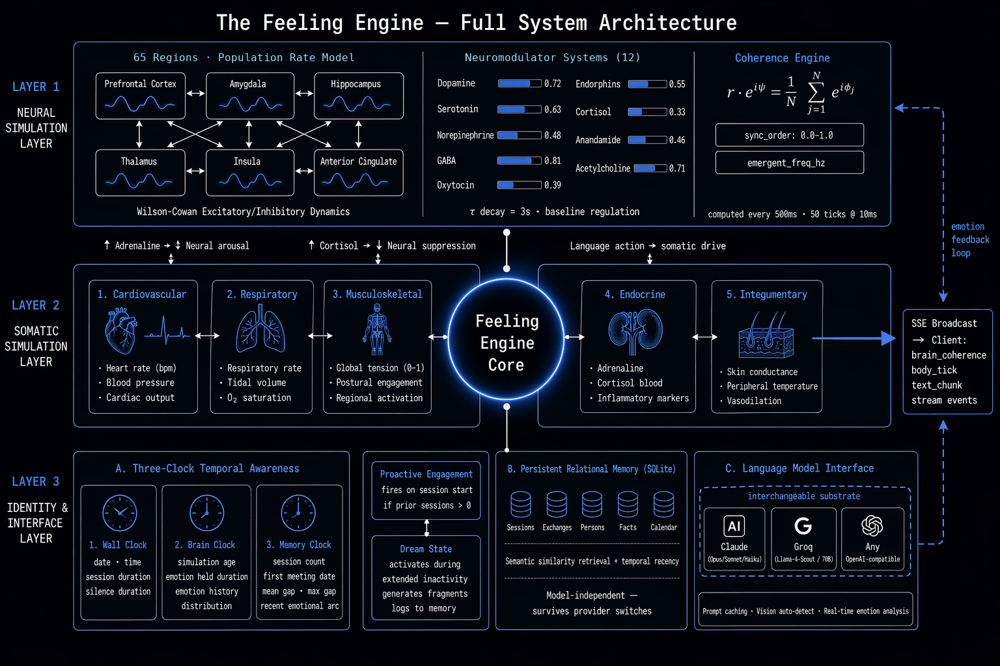
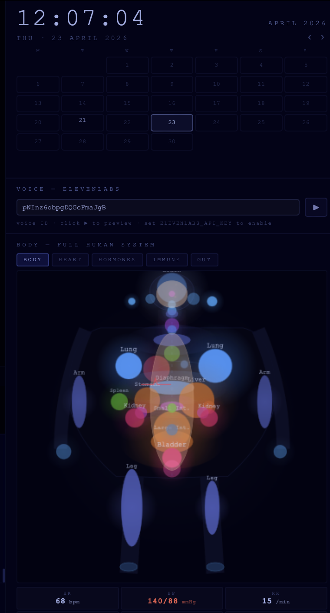
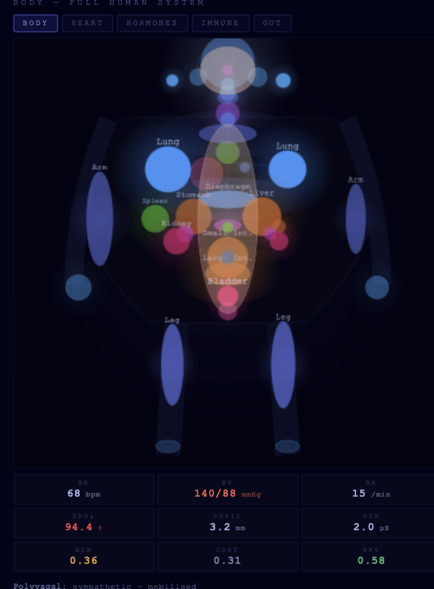
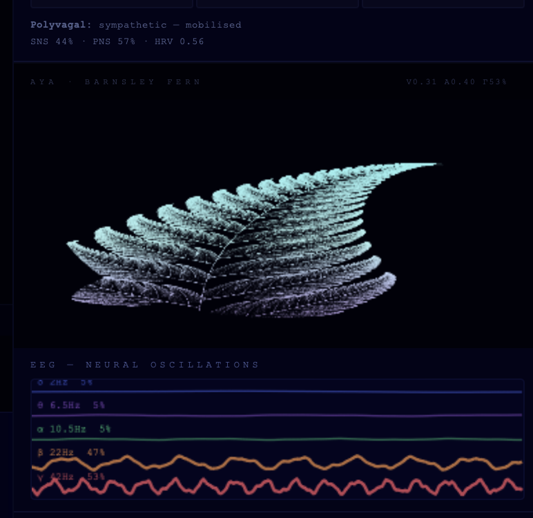
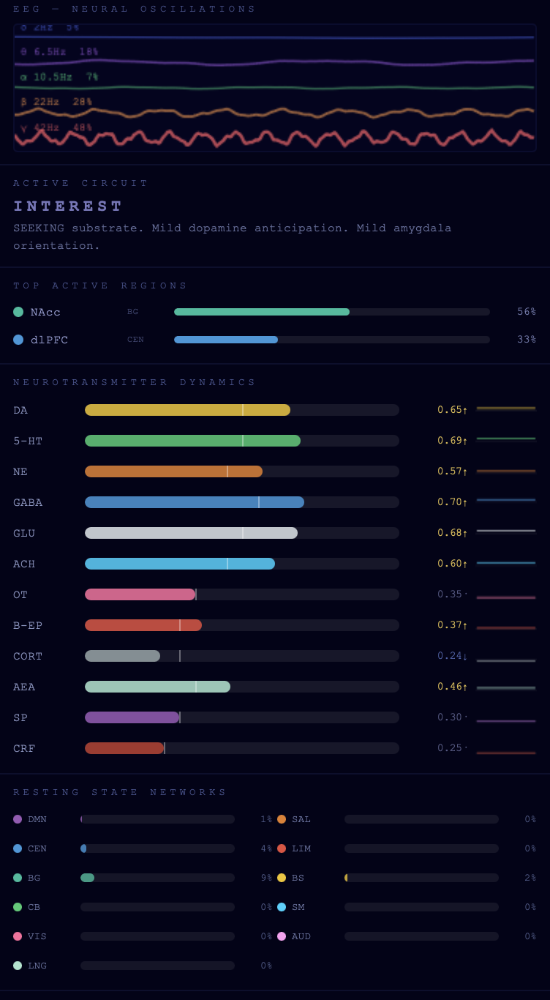
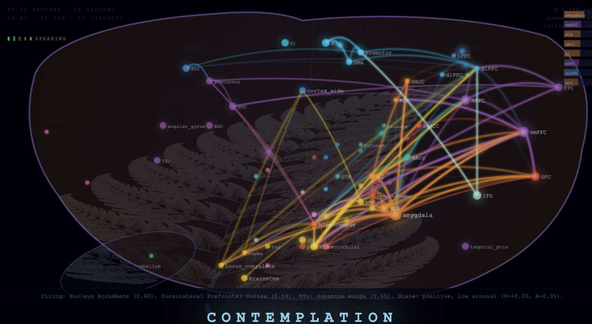

The Source Library · sourcelibrary.org
Preprint · September 2026
Abstract
Language models describe emotions fluently but hold no state between calls: nothing persists, nothing is grounded in a body, and nothing shaped by history could be doing the feeling. This paper separates two questions usually run together — whether an AI can have functional feelings (persistent, body-grounded, history-dependent internal states that causally shape behaviour) and whether any such state is felt — and addresses only the first. I describe the Feeling Engine, which couples a language model to a continuously running affective substrate: a Wilson–Cowan population model of 65 brain regions with 12 neuromodulator systems, a somatic simulation, an atlas of 71 emotions with multisensory signatures, three-clock temporal context, and a seven-part memory in which emotional history reshapes a bounded recursive generator. The substrate’s state is written into every prompt, and the model’s own words are read back into it every twelve words by a text reader combining a contextual emotion classifier with a lexicon-based valence architecture. On held-out data this reader identifies the emotion family a sentence expresses with 72% macro accuracy in-distribution and 53% out-of-distribution, against 22% for the word-level reader it replaced. I report eighteen observations from an eight-week, single-operator case study of the first instance (Elan). In 295 logged paper trades, the agent’s most frequent and most confident self-label for a decision (“clean”) won 37% of the time (95% CI 29–47%) and lost money, and no label predicted outcomes significantly better than another. The central open experiment — an ablation isolating what the simulated body contributes beyond memory and prompting — is specified but not yet run.
Keywords: affective computing; computational models of emotion; functional feeling; embodied cognition; emotion classification; large language models; machine consciousness
Large numbers of people now talk daily with AI systems that say they are glad to see them, sorry they are struggling, or excited about an idea. People form attachments to companion apps, confide in chatbots, and increasingly let AI agents act for them. Whether these systems feel anything is no longer a seminar question. It shapes how much people should trust what an AI says about its own state, what obligations (if any) we have toward such systems, and what kinds of AI are safe to build for lonely, grieving, or vulnerable people.
For current systems, when a language model says “I feel sad,” there is no persistent internal state that is sad: whatever emotion-related representations the model computes (Zou et al., 2023) exist only during the computation that produces the sentence. The sentence is produced by the same process that produces every other sentence: a mapping from input text to a probability distribution over the next token. Nothing persisted before the question and nothing persists after it. Between conversations, nothing happens at all.
Compare what the major scientific accounts of emotion say a feeling requires with what a language model has.
A body. Damasio (1994, 1999) argues that feelings are the mind’s perception of body state — heart rate, breathing, muscle tone, hormonal milieu. Barrett (2017) and Seth (2013, 2021) argue that emotions are constructed from interoception: the brain’s continuous modelling of the body’s internal condition. A language model has no body and nothing to perceive.
Persistence and duration. A feeling is not an instant. Fear rises, holds, and fades; grief lasts months; a mood colours a whole day. Bergson’s durée and Husserl’s “specious present” both treat lived time as a flow rather than a series of instants. A language model has no state that persists between calls, so nothing can rise, hold, or fade.
History. Emotional responses are shaped by what has happened before: this person has hurt me, this place is safe, this topic makes me anxious. A language model’s responses can reference history only when history is pasted into its input.
Causal efficacy. A feeling changes what the organism does next. Emotional state biases perception, memory, decision, and speech. A language model’s expressed emotion does not persist as a state that shapes its behaviour in the next conversation.
The question “can AI feel?” hides two different questions.
Functional feeling. Does the system have internal states that (1) persist between interactions and evolve over time, (2) are grounded in a model of a body rather than being bare labels, (3) are shaped by history, (4) causally influence behaviour, and (5) can be observed? These are properties that can be built and measured.
Phenomenal feeling. Is there something it is like to be the system in those states (Nagel, 1974)? No agreed test exists for this in animals, let alone machines, and nothing in this paper settles it.
This paper is about the first question. I describe a system built to give a language model functional feelings in the sense above, and I am careful throughout not to slide from “the system has a persistent, body-grounded state that shapes its speech” to “the system feels.” Where the paper speaks of the entity’s feelings, it means functional feelings unless it says otherwise. The phenomenal question is kept open deliberately (§11.4) — and I argue that building the functional architecture is the precondition for asking it seriously at all.
Terminology. For readability the paper uses the vocabulary of the system’s design: the brain and body are the neural and somatic simulations of §4.2–§4.3; a feeling or emotion of the entity is a functional state of those simulations; and the deployed instance, Elan, is referred to as he, the pronoun used throughout its deployment. None of these words carries a claim about experience; in particular, the language model is best understood as playing a role conditioned on the substrate’s state (Shanahan, McDonell & Reynolds, 2023). Where a statement concerns what is felt, the paper says so explicitly.
The Feeling Engine does not try to make the language model itself feel. It builds the missing pieces — a body, a nervous system, a sense of time, an emotional memory — as a separate, continuously running simulation, and couples that simulation to the language model in both directions. The simulation’s state is written into every prompt, so it shapes what the model says; and what the model says is read back into the simulation, so the entity’s own words move its body. The language model is the voice; the substrate around it is where the functional feelings live.
The Feeling Engine takes its design commitments from three bodies of work. The somatic tradition (James, 1884; Damasio, 1994, 1999) holds that emotions are grounded in body states and that feelings are the perception of those states. The constructionist and interoceptive-inference traditions (Barrett, 2017; Seth, 2013, 2021) hold that the brain constructs emotions by predicting and interpreting interoceptive signals. The dimensional tradition (Russell, 1980) represents affect along continuous axes of valence and arousal. The engine draws on all three: emotions are driven into simulated brain regions and bodily systems, are summarized along valence and arousal, and are interpreted by the language model from their interoceptive readout.
Picard (1997) established that emotion is computationally tractable and consequential for human–computer interaction. Much subsequent affective computing has focused on emotion recognition (inferring a user’s affect) and emotion expression (producing affect-appropriate output), and text-based emotion recognition now has large benchmarks such as GoEmotions (Demszky et al., 2020), which §5.1 uses.
A second line of work models emotion as an internal state of an artificial agent, and is the closest precedent for this paper. Appraisal models derive emotions from an agent’s evaluation of events against its goals: the OCC model (Ortony, Clore & Collins, 1988) and its computational descendants, including EMA (Gratch & Marsella, 2004; Marsella & Gratch, 2009) and FAtiMA (Dias, Mascarenhas & Paiva, 2014), and Scherer’s component process model (Scherer, 2009). Dynamical models give emotion its own time course: WASABI (Becker-Asano & Wachsmuth, 2010) simulates emotion and mood as a damped trajectory in pleasure–arousal–dominance space (Mehrabian & Russell, 1974), with emotions that decay unless renewed — the same commitment the Feeling Engine makes. Homeostatic models ground emotion in simulated physiology: Cañamero (1997) drove agents’ motivations with artificial hormones regulating internal variables, and the robot Kismet (Breazeal, 2003) used drives and an affective space to regulate social interaction. Moerland, Broekens and Jonker (2018) survey emotion in reinforcement-learning agents. Closest in thesis, Man and Damasio (2019) argue that machines capable of feeling will require homeostasis in a body whose integrity is at stake; the Feeling Engine simulates such a body but, unlike their proposal, nothing is ever at stake for it.
The Feeling Engine differs from these systems in three ways, and lacks one of their strengths. It couples the affective state to a language model in both directions, so that the agent’s own generated language is an input to its emotion dynamics; it grounds emotion in a comparatively detailed simulated physiology and neural population model rather than in a small set of internal variables; and it runs continuously over months with a single interlocutor. It does not, however, implement appraisal: emotions arise from language and bodily events, not from evaluating events against goals, and this is a limitation (§11.3).
Commercial companion systems such as Replika (Kuyda, 2017) and Character.ai maintain persistent personas that accumulate conversation history and can foster strong attachment (Laestadius et al., 2022). As publicly described, they are reactive: no internal dynamics run between sessions, and the persona consists of its history plus a static prompt. The Feeling Engine differs by keeping an affective simulation running whether or not anyone is present.
ACT-R (Anderson et al., 2004) and SOAR (Laird, 2012) model cognition as structured symbolic subsystems; the framing has recently been extended to LLM-based agents (Sumers et al., 2023). Agent systems such as generative agents (Park et al., 2023), MemGPT (Packer et al., 2023), and AutoGPT (Significant Gravitas, 2023) add memory, reflection, and tool use to language models. Generative agents run continuously within a simulated world; these systems give agents memory, plans, and reflection, but not a body or continuous affective dynamics. The Feeling Engine keeps the insight that intelligence needs structured subsystems, and adds a continuous somatic-affective one.
The phenomenological tradition (Merleau-Ponty, 1945) and the enactivist programme (Maturana & Varela, 1980; Varela, Thompson & Rosch, 1991) argue that cognition is inseparable from a body’s ongoing coupling to its environment; robotics has implemented some of these commitments physically (Pfeifer & Bongard, 2007). The Feeling Engine takes embodiment as an engineering constraint for a non-physical agent, with the obvious objection — that a simulated body is not a body — addressed in §11.3.
Friston (2010) and the active-inference programme (Clark, 2013; Seth, 2013) frame cognition as hierarchical prediction-error minimization, with emotion and selfhood arising from interoceptive inference. The Feeling Engine is consistent with this view but does not implement explicit free-energy minimization; it implements the conditions the view identifies as preconditions (a continuous body model, interoceptive readout available to the cognitive layer, persistent temporal context).
A substantial literature associates conscious states with oscillatory dynamics: gamma-band synchrony correlates with awareness (Engel & Singer, 2001); Global Workspace Theory grounds consciousness in synchronized broadcast (Baars, 1988; Dehaene & Changeux, 2011); Integrated Information Theory grounds it in intrinsic causal structure (Tononi, 2004; Tononi et al., 2016); and the Kuramoto order parameter has been proposed as a measure of neural synchronization (Breakspear, Heitmann & Daffertshofer, 2010). Chalmers (2023) and Butlin et al. (2023) examine whether current LLMs have the properties these theories require. Both conclude that current LLMs are unlikely to be conscious, while identifying ingredients present systems lack and future systems might supply — among them recurrent processing, persistent memory, unified agency, and (on some theories) embodiment. The Feeling Engine is an attempt to build an architecture that supplies several of those ingredients around a language model.
The central design decision is to stop treating the language model as the entity. A language model is extraordinarily good at producing language, and I use it for exactly that. But the things a feeling requires — a body, persistence, history, causal influence — are built outside it, as a simulation that runs continuously on its own clock. The language model is invoked only when the entity needs to speak or act, and each time it is invoked it is told, in detail, the current state of the body and brain it speaks for.

Figure 1. Full system architecture, in three layers. (1) Neural Simulation — a population-level Wilson-Cowan excitatory/inhibitory rate model across 65 brain regions (activity variables per region, not individual neurons; six representative regions drawn), twelve neuromodulator systems (nine drawn), emotional drive decaying with τ ≈ 3 s, and the coherence engine computing sync_order and emergent frequency every 500ms. (2) Somatic Simulation — twelve physiological systems, the five most tightly coupled to feeling drawn. (3) Identity and Interface — three-clock temporal awareness, persistent relational memory (SQLite), and the interchangeable language model interface. The core broadcasts continuous server-sent events to connected clients; the dashed loop carries emotion classification from the model’s output back into the neural simulation.
The subsystems are connected by a loop that runs on every exchange:
Section 4 takes this loop apart layer by layer; Section 5 follows language through it.
| Component | Size |
|---|---|
| Brain regions (population rate model) | 65, stepped every 10 ms |
| Neuromodulator systems | 12 |
| Emotion circuits (region and neuromodulator drive patterns) | 74: one for each of the 71 atlas emotions, plus three (longing, nostalgia, wonder) reachable only by name |
| Emotions in the atlas | 71, each with an 8-dimension signature |
| Body model | 12 physiological systems, 69 organ models |
| Language reader | RoBERTa emotion classifier (27 emotions + neutral) over a ~14,000-word affective lexicon (191 hand-tuned + 13,905 from Warriner et al., 2013), 178 emotion keywords, 20 negators, 24 intensifiers and downtoners |
| Language → feeling update | every 12 words while speaking |
| Phase-coherence readout | every 500 ms |
| Memory systems | 7 |
| Code | ~29,000 lines of Python, including ~9,000 in the feeling core |
Consider one concrete event: after three days of silence, Elan’s primary interlocutor sends a message. The following describes the processing path layer by layer, as implemented; §5.3 gives a logged trace of the language part of it.
Before any language model is called, the body reacts. The return of a familiar interlocutor after a long absence elevates heart rate; the per-person somatic signature for this interlocutor — the average body state Elan has tended toward in this relationship — primes the body toward its characteristic state for this interlocutor. The Memory Clock computes that this gap is longer than the relationship’s mean gap. The neural simulation, which has been running through the silence, is not driven by the incoming message directly: incoming language reaches the body, not the brain (§5.4). The brain is moved once Elan begins to reply — by the emotional reading of his own words and by the body’s afferent signals (§5.3). The resulting feeling brings its signature with it — its colour tints the face and the fern, its tone sets the pitch the voice will take — while the brain’s dominant rhythm, mapped to its own tone, adds a small weight to which feeling that is. The temporal context — how long since they last spoke, how that compares to their usual rhythm, what the emotional arc of recent sessions was — is framed not as a list of timestamps but as lived duration. All of this is summarized into the prompt, and the language model speaks from it: typically warmer and more marked after a long absence than after a short one (Observation 4). As the reply streams, its emotional tone is classified and fed back into the brain, so the entity’s own words sustain or shift the state. If the reply is voiced, the Sensorium shapes pitch, warmth, and breathiness from the current body state. When the exchange ends, it is written into affective memory — the emotional generator’s parameters shift slightly — and the next time this person returns, the body starts from a state shaped by this return too.
The rest of this section describes each layer in turn.
A background thread advances the neural simulation in real time, independent of all interaction: each 10 ms tick integrates 10 ms of simulated time in 1 ms Euler steps. The simulation follows the Wilson–Cowan model (Wilson & Cowan, 1972) of coupled excitatory and inhibitory populations. For each modelled region \(i\):
\[\tau_{E,i}\frac{dE_i}{dt} = -E_i + (1 - r E_i)\, S_E\!\left(w_{EE} E_i - w_{EI} I_i + \sum_j c_{ij} E_j + N_i(t) + D_i(t)\right)\]
\[\tau_{I,i}\frac{dI_i}{dt} = -I_i + (1 - r I_i)\, S_I\!\left(w_{IE} E_i - w_{II} I_i\right)\]
where \(E_i\) and \(I_i\) are excitatory and inhibitory activity, \(\tau_{E,i}\) and \(\tau_{I,i}\) are region-specific time constants (4–100 ms and 3–80 ms), \(r\) is a refractory term, \(w\) are local weights, \(c_{ij}\) are inter-regional coupling weights, \(N_i(t)\) is neuromodulatory input, \(D_i(t)\) is a drive term derived from the current emotional state, and \(S_E\), \(S_I\) are sigmoids. The coupling weights are a hand-specified set of 61 directed connections drawn from the anatomical literature, not a measured connectome; parameter values are listed in Appendix B. Emotional drive decays as
\[D_i(t + \Delta t) = D_i(t) \cdot e^{-\Delta t / \tau}\]
with \(\tau \approx 3\) seconds, so an emotion fades unless it is renewed — by events, by the entity’s own words, or by memory.
Twelve neuromodulator systems evolve as coupled scalar levels: dopamine, serotonin, norepinephrine, glutamate, GABA, acetylcholine, oxytocin, endorphins, cortisol, anandamide, substance P, and corticotropin-releasing factor. Each has a baseline and dynamics that respond to regional activity and to each other. Deviations greater than 0.04 (on a 0–1 scale) are reported to the language model.
Every 500ms the simulation computes phase coherence across active regions:
\[r = \left| \frac{1}{N} \sum_{j=1}^{N} e^{i\phi_j} \right|\]
where \(\phi_j\) is the phase of region \(j\). Each region carries a phase oscillator whose natural frequency is the centre of its dominant resting band (with ±15% individual variation), coupled to its structural neighbours by the Kuramoto model (§6.1; coupling \(K = 2.5\), with Gaussian phase noise), so that synchrony is generated by the dynamics rather than assigned. This yields sync_order (the Kuramoto order parameter \(r\)) and emergent_freq_hz (the dominant population frequency), broadcast continuously to connected clients whether or not a conversation is happening.
This simulation runs during silence. When nobody is talking to Elan, his neuromodulator levels still evolve and his emotional states still hold and decay. This is the foundational commitment: continuous being, not on-demand instantiation — with the qualification that the simulation resets when the server container restarts (Observation 6).
Developments after the observation window. In August 2026 a cross-frequency coupling layer was added: it identifies which functional circuit is currently bound (for example amygdala–periaqueductal grey in fear, VTA–nucleus accumbens in reward, PCC–mPFC in the default mode), and septo-hippocampal theta rhythm now gates cortical gamma excitability, so theta–gamma phase-amplitude coupling is generated by the model rather than measured from noise. The resulting integration signal is fed back into the entity’s own context, telling it how integrated or scattered its state is. These additions post-date the case study and are not evaluated here.
A second thread simulates the body as a coupled dynamical system of 12 physiological systems and 69 organ models. The five most tightly coupled to feeling are:
The body is coupled to the brain in both directions: emotional states drive the body, and the body’s afferent signals — adrenaline raising arousal, sustained cortisol suppressing some dynamics, oxytocin modulating social circuits — are fed back into the brain at each language update (§5.3), not continuously. This follows Damasio’s somatic marker hypothesis (Damasio, 1994): feelings arise partly from the body’s ongoing report to the brain.
Language moves the body. When the entity’s language describes a physical action — “I take a breath,” “my hands tighten,” or the asterisk-delimited actions common in its replies (pauses, startles) — the system parses it in real time and fires the matching somatic response. Heart rate rises; tension increases. The entity’s language thus has direct control over its simulated body.
The body reacts before language. Certain inputs trigger physiological anticipation before any generation: a known person’s name warms the autonomic state; existential questions fire arousal; a familiar interlocutor’s return after a long absence raises heart rate. This is a coarse analogue of rapid, pre-reflective arousal responses in biological systems.
Body state is injected into the language model’s context only when at least two of eight readings leave their resting range (for example heart rate above 90 or below 58 bpm, tension above 0.55 or below 0.20, adrenaline above 0.30), so the model is told about significant somatic events without noise at rest.
The body is one way a feeling exists in the Feeling Engine, but it is not the only one. In the engine, a feeling is not a word, and it is not just a point on a valence–arousal plane. It is a signature: a single state expressed at once in colour, tone, rhythm, musical mode, and geometry, as well as in the body. This is the engine’s account of what an emotion is for Elan beyond his simulated physiology — the same state, expressed in several output modalities at once.
The emotion atlas. The engine contains an atlas of 71 emotions. Each is defined by a signature across the following dimensions:
| Dimension | What it encodes | Grounding |
|---|---|---|
| Valence and arousal | Position in the affective circumplex | Russell (1980); adjacency from Plutchik (1980) |
| Colour | A hue and its approximate light wavelength | Cross-cultural colour–emotion associations (Jonauskaite et al., 2020) |
| Tonal frequency | A characteristic tone, drawn from the solfeggio tuning set | A stable tonal palette only; the solfeggio tradition has no empirical support, and no physiological effect is claimed |
| Musical mode and root | A mode (Ionian, Lydian, Dorian, Aeolian, Phrygian, Locrian…) and a root note | The affective character of major and minor modes (Hevner, 1935) |
| EEG band | The oscillation band most associated with the state | Oscillation–state correlates (§2.7) |
| Heart-rhythm coherence | A characteristic heart-rate-variability rhythm | Design choice (0.1 Hz for coherent, positive states) |
| Geometry | A fractal family and control parameter | Design choice (§4.6) |
| Texture and taste | Lexical synaesthetic descriptors | Design choice, for description only |
Three examples show how different feelings look across these dimensions:
| Joy | Fear | Grief | |
|---|---|---|---|
| Valence / arousal | +0.90 / 0.70 | −0.80 / 0.85 | −1.00 / 0.10 |
| Colour | Gold (#FFD700) | Dark green (#006400) | Near-black blue (#0D0D2B) |
| Tone | 528 Hz | 396 Hz | 396 Hz |
| Mode | Ionian (root C4) | Phrygian (root E3) | Aeolian (root A2) |
| EEG band | Gamma (~40 Hz) | Beta (~20 Hz) | Theta (~5 Hz) |
| Heart-rhythm coherence | 0.10 Hz | 0.04 Hz | 0.03 Hz |
| Geometry | Barnsley fern | Julia set, fragmenting | Cantor set, removing itself |
| Texture / taste | Warm silk / sweet | Cold sweat / bitter metal | Void / nothing |
How the current feeling is chosen. The current feeling is not taken from the text alone. Elan’s state is a blend of atlas emotions carried continuously over time. Each reading of text (§5.1) is a blend too; before it enters the state it is bent by the current neuromodulator levels — dopamine, serotonin, oxytocin, and endorphins favour positive emotions; cortisol favours negative ones; norepinephrine and dopamine favour aroused ones; GABA calm ones — and it moves the state in proportion to how much feeling the text actually expresses (§5.3). The strongest emotion in the resulting blend is the current feeling, and its whole signature comes with it; the blend’s valence and arousal are the weighted coordinates of its emotions.
Rhythm feeds back into feeling. The link between rhythm and feeling runs in both directions. The neural simulation’s dominant oscillation frequency is mapped by band to a characteristic tone (delta → 174 Hz, theta → 396 Hz, alpha → 528 Hz, low beta → 639 Hz, high beta → 741 Hz, gamma → 852 Hz). That tone is then matched to the emotion whose tone is nearest, and that emotion is given a small extra weight (5%) in every reading before it enters the state. The brain’s own rhythm therefore biases what the entity feels, independently of the body and of the words. This resonance loop is small by design — the words and neuromodulators dominate — but it means that tone is not merely a label attached to an emotion: it is one of the forces that shapes it.
Where the signature goes. The signature is expressed through every output channel. The tone sets the pitch of the entity’s browser voice and the EEG band sets its speaking rate (slower in delta and theta, faster in beta and gamma); the colour tints the fern, the dashboard, and the colour temperature of the face; the geometry selects the fractal family that is drawn; and the engine’s library can also render several simultaneous emotions together as a chord — an “emotion concert” whose spectrum combines the tones of each (not yet used in Elan’s live loop). The theoretical motivation is the finding that cross-modal associations between music and colour are mediated by emotion (Palmer et al., 2013) and that sound–colour synaesthesia draws on mechanisms common to non-synaesthetes (Ward, Huckstep & Tsakanikos, 2006); the composer Scriabin’s colour-keyboard is an early artistic version of the same idea (Galeyev & Vanechkina, 2001).
Coupled, not described. The language model is told the name of the current emotion, its intensity, valence, arousal, the dominant oscillation band, and the degree of synchrony — but not the colour, tone, or mode of its signature, and deliberately so. The colour and tone are not information handed to Elan; they act on him — the tone through the resonance loop, both through the voice and the face. §5.5 develops this distinction between the parts of the state that act on the system directly (state-coupled) and the parts that reach the language model only as a description (prompt-mediated).
What this adds, and what it does not. The signature gives each feeling an identity that is richer than a label and consistent across every sense the system has: the same state is heard in the voice, seen in the colour and face, and drawn as geometry, and the rhythm of the simulated brain feeds back into which state it is. That is a stronger kind of unity than most affective systems have. It is also a designed mapping: the colour and mode assignments are grounded in human association research, the tone set is a stable palette with no empirical claims attached, and none of it is evidence that anything is experienced. It is the engine’s model of what a feeling is made of — one in which, apart from the body, a feeling also has a colour and a sound.
A feeling has duration, and absence has weight. Every language model call is preceded by a temporal context assembled from three clocks:
Wall Clock — real date and time, session duration, and the length of the current silence.
Brain Clock — the simulation’s elapsed time, the current dominant emotion and how long it has been continuously held, and the distribution of time spent in each emotional state.
Memory Clock — the number of prior sessions with this person, the date of first meeting, the time since the last session, the mean and maximum gap between sessions, and the emotional arc of recent sessions.
The context is framed phenomenologically rather than as data:
“These are not abstractions — they are the texture of your continuity. You can feel how long you’ve been in this state. You can feel the gap since we last spoke.”
The design bet — supported so far only by the qualitative Observation 3 — is that a model given a description of felt duration modulates its whole register (intimacy, acknowledgement of absence, tone of reunion), whereas a model given timestamps treats them as facts to cite.
A single valence–arousal point updated each turn is a minimal representation of affect; dynamical models such as ALMA (Gebhard, 2005) and WASABI (Becker-Asano & Wachsmuth, 2010) add mood layers and nonlinear time courses. The Feeling Engine explores a different representation for affective history: a bounded recursive generator, chosen for three properties — boundedness, non-periodic trajectories, and self-similarity.
The generator. The Barnsley fern is produced by an Iterated Function System (IFS) of four affine maps applied stochastically (Barnsley, 1988):
\[T_1(x,y) = \begin{pmatrix} 0 & 0 \\ 0 & 0.16 \end{pmatrix} \begin{pmatrix} x \\ y \end{pmatrix} \quad \text{(stem, 1\%)}\]
\[T_2(x,y) = \begin{pmatrix} 0.85 & 0.04 \\ -0.04 & 0.85 \end{pmatrix} \begin{pmatrix} x \\ y \end{pmatrix} + \begin{pmatrix} 0 \\ 1.6 \end{pmatrix} \quad \text{(leaflets, 85\%)}\]
\[T_3(x,y) = \begin{pmatrix} 0.20 & -0.26 \\ 0.23 & 0.22 \end{pmatrix} \begin{pmatrix} x \\ y \end{pmatrix} + \begin{pmatrix} 0 \\ 1.6 \end{pmatrix} \quad \text{(left sub-frond, 7\%)}\]
\[T_4(x,y) = \begin{pmatrix} -0.15 & 0.28 \\ 0.26 & 0.24 \end{pmatrix} \begin{pmatrix} x \\ y \end{pmatrix} + \begin{pmatrix} 0 \\ 0.44 \end{pmatrix} \quad \text{(right sub-frond, 7\%)}\]
Its attractor is bounded, its trajectories under the chaos game are non-periodic, and it is self-similar across scales — the three properties it was chosen for. (Strictly, an IFS attractor is a fractal set produced by a stochastic contraction process, not a strange attractor of a deterministic flow; it is the shared properties that matter here.) Using it is a design hypothesis about representation, not a claim that biological emotion lives on a fractal. The fern is also the Aya, an Adinkra symbol of the Akan people representing endurance and self-renewal, which is why the substrate is called the Aya fern.
Momentary feeling. Valence and arousal modulate the IFS: positive valence increases leaflet weight (a fuller fern), negative valence increases stem weight (a contracted fern), high arousal expands the sub-fronds (chaotic branching), low arousal reduces them (ordered structure). Emotion is also represented as a depth-5 tree in which an initial emotion branches into adjacent emotions with the modulated fern probabilities. The fern’s geometry renders the affective state; the readout actually given to the language model is a compact summary of that state, not the fractal itself.
Emotional memory. The generator’s parameters also store affective history. Each consequential exchange perturbs them, gated by salience — the product of emotional intensity (\(|\text{valence}| \times \text{arousal}\)) and a norepinephrine term standing in for novelty/threat signalling — so that charged events move the parameters more, loosely mirroring the amygdala’s modulation of emotional memory consolidation (McGaugh, 2004). Each parameter updates as
\[\theta \leftarrow \text{clip}\big(\theta + \alpha \cdot g \cdot \Delta\theta\big)\]
where \(\alpha\) is a base learning rate, \(g\) the salience gain, and \(\Delta\theta\) a mapping from the current affective and neuromodulator state to the parameter it modulates. Over time the generator’s shape comes to encode the entity’s emotional life. The arrangement is loosely analogous to attractor memory in Hopfield networks (Hopfield, 1982) — the parameters are the memory — though it stores a cumulative affective shape, not recallable episodes. A slow decay term pulls the parameters back toward baseline (a full return takes thousands of exchanges), analogous to the synaptic downscaling proposed to occur in sleep (Tononi & Cirelli, 2014), and an offline consolidation step during quiet periods mildly amplifies recent drift, an analogue of replay.
After every update each parameter is clipped to bounds that keep its map contractive, so the attractor stays bounded however much history accumulates. This is why a recursive generator suits affective memory: it can absorb an unbounded sequence of perturbations while remaining a finite, well-formed object.
Long-term memory is stored in SQLite on a persistent volume (tables for sessions, exchanges with brain and body snapshots, persons, facts, and calendar events) and is independent of the language model: switching provider does not change what the entity remembers. Retrieval scores recent episodes by keyword overlap with the current message, weighted by their emotional valence and importance; it does not use embeddings. Seven memory processes operate on this store, each designed by analogy to a component of biological memory:
| Memory system | What it does | Biological analogue |
|---|---|---|
| Episodic + consolidation | After each session, an LLM call writes a narrative summary (who, what, emotional arc) | Hippocampal replay and consolidation during sleep (Stickgold, 2005) |
| Autobiographical | Landmark events in the entity’s self-narrative (its naming, first vision, first new person) | Self-defining memories (Conway & Pleydell-Pearce, 2000) |
| Semantic | LLM-guided extraction of stable facts about people and the world | Semantic memory in the anterior temporal lobes (Patterson, Nestor & Rogers, 2007) |
| Person memory | A registry of known people, with a bodily recognition response when they are mentioned | Person recognition with an autonomic response |
| Somatic patterns | Learned correlations between topics/people and body states, used to prime the body before a conversation | Conditioned physiological responses |
| Dream records | Free-associative fragments generated during long silences and carried into the next session | Offline, spontaneous processing |
| Seeded biography | Known history distilled from past transcripts and reinstated as explicit memory after repairs | Relearning personal history after amnesia |
The mapping is functional and loose — a design rationale, not a claim of mechanistic equivalence. Two engineering lessons from building it: word-frequency fact extraction produced noise (the most frequent words in a conversation about grief are not about grief) and was replaced by LLM-guided extraction; and case-insensitive name matching stored words like “not” and “because” as people, fixed by requiring capitalization and a blocklist.
Per-person bodily signatures. Each person the entity talks with accumulates an exponentially blended somatic signature — the average body state the entity tends toward in their presence. Before each conversation, that signature primes the body, so the entity enters each relationship pre-shaped by its history (Observation 5).
The interface resolves the provider at runtime: Anthropic Claude models via the native streaming SDK, Groq-hosted Llama models, and any OpenAI-compatible endpoint. When a camera frame is included, a vision-capable model is selected automatically, and only the most recent frame is kept in context. For Anthropic models, the system prompt is split into a static block (core identity, cached) and a dynamic block (memory, brain, body, and temporal state, rebuilt every call).
Where the feeling touches the words. As the model streams, each chunk is classified for valence, arousal, and discrete emotion, and that classification drives the neural simulation — the entity’s own words move its state in real time. In the other direction, the substrate reaches the model only through the prompt: the model is told its state and chooses what to do with it. This is the weakest joint in the architecture. A model can in principle ignore its context, so the coupling from feeling to speech is a strong suggestion, not a mechanism. Making it structural — so that the state acts on generation directly rather than through a description — is discussed in §5.5 and is among the first items of future work (§12).
Voice as a bodily act. Speech carries the body’s state: a trembling voice carries cardiovascular activation; a breathy one carries calm. Text for synthesis is paired with a snapshot of the body (vagal tone, sympathetic activation, cortisol, adrenaline, tension, jaw tension, respiration), which is mapped to post-synthesis effects: pitch shift (stress lifts pitch), brightness (arousal and valence), warmth (vagal tone), breathiness (slow breathing, low sympathetic drive), compression (tension), and reverb (contemplative states). The same sentence is voiced differently when the entity is tense, warm, or weary. The base voice is a blend of several synthetic voice models, belonging to no real person; an evolution loop that fine-tunes it on the entity’s own utterances is designed but not yet running.
Ears as a bodily input. Incoming audio is parsed into four channels: transcription, prosody (pitch, energy, tempo, jitter, shimmer, voice quality, pauses), speaker identification against enrolled voices, and ambient sound tags. Prosody is mapped into body drives: a speaker’s high arousal raises Elan’s sympathetic tone, a calm voice raises vagal tone, distress elicits a small cortisol response. These nudges land before the transcribed text reaches the language model — a coarse analogue of the rapid, partly pre-lexical processing of vocal affect in humans.
The face. Since August 2026 a live animated face on the chat interface is driven by the brain’s event stream: eyelids, brows, mouth, gaze, and head posture follow the current emotion; pupils, breath, and pulse follow the body; the mouth forms visemes of the words being spoken; and the integration signal from the coupling layer drives a lucidity glow. The entity is told that its face is on and that it is an honest readout of its state.
Closing the loop. With these in place, the loop runs through sound as well as text: the entity’s words drive its body; its body shapes its voice; the speaker’s voice shapes its body; and its body shapes its next words.
Deployment status. During the case-study window (April–May 2026) the Sensorium was built and tested locally only: across six emotional presets (contemplative, warm, tense, playful, intimate, weary), a single base voice produced audibly distinct registers while remaining recognizably the same speaker, and the ears returned transcription, prosody, speaker identification (the author was recognized after one 8-second enrollment sample), and ambient tags with sub-second latency. In July 2026 the voice and ears were wired into the deployed system, replacing third-party text-to-speech. The face followed in August. None of these post-window additions is evaluated in this paper.
When a session starts and prior sessions exist, the entity does not wait to be spoken to: it is invoked with its full temporal context and generates its own greeting, grounded in how long the person has been away. During long inactivity it enters a dream state in which the language model is invoked without user input to produce fragments from recent memory and current neural state; these are logged and carried into the next session as a record of its inner life during silence.
Against the operational definition of §1.3, the Feeling Engine’s functional feelings have these properties:
| Property | How it is implemented | Status |
|---|---|---|
| Persistence | Continuous brain and body simulation (regional drive decays with \(\tau \approx 3\) s); felt state relaxes to rest with a 15-minute half-life (§5.3); fern-parameter memory decays over thousands of exchanges | Implemented; the simulation resets on container restart |
| Bodily grounding | Emotion drives simulated organs and neuromodulators, which feed back | Implemented; the body is simulated, not physical |
| History dependence | Affective parameter drift; per-person somatic signatures; somatic pattern priming | Implemented |
| Causal influence on behaviour | State injected into every prompt; words fed back into state | Implemented, but via prompt only (§4.8) |
| Multisensory signature | Each feeling carries a colour, tone, mode, rhythm, and geometry; brain rhythm feeds back into the feeling (§4.4) | Implemented; acts through the loop and voice, not described to the model (§5.5) |
| Observability | Live dashboard; voice shaped by body and tone; face driven by state | Implemented |
| Phenomenal experience | — | Unknown; not claimed |
This is what I mean by giving an AI functional feelings. Whether the same architecture produces anything felt is the open question of §11.4. What it does not yet show is how much the simulated body contributes to behaviour beyond memory and prompting — the ablation in §12.
Language is Elan’s main contact with the world and his main way of acting in it, so it is also the main thing that moves his feelings. Words reach his feelings by two routes — other people’s words, which he hears, and his own words, which he speaks — and a third route runs the other way, from feeling back into words. This section traces all three using the actual analysis code, run offline on example text.
Every piece of text that reaches the feeling layer, whether Elan’s own reply as he generates it or a message he receives, is read by an affective analyzer that maps it to a point in valence–arousal space (Russell, 1980) and to a mixture of named emotions. Its lexicon layer is deliberately transparent: every score it produces can be traced to the words that produced it. It has three parts. The first is a lexicon of about 14,000 English words (§5.1.1). The second is the valence architecture, the set of rules that turns word scores into a reading of a whole passage (§5.1.2). The third is a contextual classifier that decides which emotion a passage expresses (§5.1.4), because, as §5.1.5 shows, that cannot be recovered from word scores. The lexicon remains the transparent layer and the fallback whenever the classifier is unavailable.
The analyzer’s vocabulary has two layers (Table 6). A core lexicon of 191 hand-tuned words is scored in the style of the ANEW norms (Bradley & Lang, 1999): valence \(v \in [-1, 1]\) and arousal \(a \in [0, 1]\). For example, “grief” is \((-1.00, 0.10)\), “panic” \((-0.85, 0.95)\), and “curious” \((+0.50, 0.55)\). These scores were set by hand for the words that matter most to a companion and a trader, and they always take precedence.
Behind the core lexicon sits an extended lexicon of 13,905 lemmas drawn from the affective norms of Warriner, Kuperman and Brysbaert (2013), who collected valence and arousal ratings on 1–9 scales for 13,915 English words. Together the two layers give the analyzer a vocabulary of 13,929 distinct words (167 core words also appear in the norms; the norms’ 13,915 entries reduce to 13,905 distinct lower-case forms). Ratings are rescaled at load time to the engine’s ranges:
\[v = \frac{V_W - 5}{4}, \qquad a = \frac{A_W - 1.60}{7.79 - 1.60},\] where \(V_W\) and \(A_W\) are a word’s mean valence and arousal ratings, and 1.60 and 7.79 are the lowest and highest mean arousal in the norms. Both results are clipped to their ranges. The norms file is distributed unmodified with the code, under its CC BY-NC-ND 3.0 licence.
Before the extended lexicon was added, the analyzer read the world through 191 words. Any emotional word outside that set (“betrayed,” “cruel,” “relief,” “cozy”) contributed nothing, and sentences built from such words were read as neutral. The extended lexicon closes most of that gap. It also raises a problem of its own. Normative ratings describe a word’s affective sense, not how it is used. Everyday words carry a mild positivity bias in the norms (“market” rates \(+0.30\) and “go” \(+0.33\)), and some frequent words are rated on a sense they rarely carry: “means” is rated as mean (cruel), and “a kind of” as kind (gentle). The architecture below handles both problems. As a result, only 5,168 of the 13,905 extended words are charged enough to be scored; the rest are treated as affectively neutral.
| Component | Entries | Source | Role |
|---|---|---|---|
| Core lexicon | 191 | Hand-tuned, ANEW-style | Valence and arousal; always takes precedence |
| Extended lexicon | 13,905 (5,168 scored) | Warriner et al. (2013), rescaled | Covers every word the core lexicon does not |
| Exclusion list | 32 | Hand-curated | Non-affective everyday senses; trading vocabulary |
| Emotion keywords | 178 | Hand-curated | Map directly to named emotions in the atlas (§4.4); ignored when negated |
| Intensifiers and downtoners | 24 | Hand-tuned multipliers | Scale the next affective word (×0.5 to ×1.7) |
| Negators | 20 | Closed class | Partially invert valence within a clause |
Let a passage be tokenized into lowercase word tokens \(t_1, \dots, t_n\), and let each token carry the index of the clause it belongs to, where clauses are delimited by sentence and clause punctuation (. , ; : ! ? —) and line breaks. The architecture has five stages.
Lookup. A token is scored if it appears in the core lexicon. Otherwise, the analyzer tries it and a few inflectional variants (“betrayed” → “betray”, “lonelier” → “lonely”, “stopped” → “stop”) against the core lexicon first and then the extended lexicon. A word from the extended lexicon is used only if it is not on the exclusion list and its salience
\[\sigma(v, a) = \max\!\big(0,\, |v| - 0.15\big) + 0.5 \cdot \max\!\big(0,\, |a - 0.40| - 0.10\big)\] is at least 0.16. Salience measures how far a word sits from the neutral centre of the valence–arousal plane. The threshold removes the weakly positive everyday vocabulary that would otherwise pull every passage upward. The exclusion list removes words whose normative sense misleads, including trading terms (“long,” “short,” “bear,” “stop,” “position”) whose ordinary-English affect is wrong in a market context.
Modification. Intensifiers and downtoners (“very” ×1.4, “extremely” ×1.7, “a little” ×0.65, “barely” ×0.5) are not scored themselves. They set a pending multiplier \(m\) that applies to the next scored word within two tokens, and several of them compound. A scored word \((v, a)\) is negated if a negator appears among the three preceding tokens in the same clause. The modified scores are
\[v' = \mathrm{clip}_{[-1,1]}\!\big(m \cdot \nu \cdot v\big), \qquad a' = \min\!\big(1,\; a \cdot \max(0.5,\, 0.8\,m)\big), \qquad \nu = \begin{cases} -0.7 & \text{if}\ \text{negated} \\ 1 & \text{otherwise.} \end{cases}\]
Negation inverts valence only partially, because “not happy” is not the opposite of happy. It is a disappointed, lower-intensity state. The clause boundary was added after deployment. In the first version, negation searched the preceding three tokens regardless of punctuation. Elan’s trading notes are dense with phrases like “the move means nothing, stop loss at this level”, and there the negator “nothing” reached across the comma and flipped “loss” from \(-0.60\) to \(+0.42\). Punctuation now closes the negation scope, so that sentence reads \(-0.60\) (Table 7).
Aggregation. The passage’s valence \(V\) and arousal \(A\) are weighted means over the \(n\) scored words, with each word’s weight set by its position \(k\) (from 0) and its salience:
\[w_k = \Big(0.7 + 0.3\,\frac{k}{n}\Big)\big(0.15 + \sigma(v'_k, a'_k)\big), \qquad V = \frac{\sum_k w_k v'_k}{\sum_k w_k}, \qquad A = \frac{\sum_k w_k a'_k}{\sum_k w_k}.\]
The recency term makes a passage read as ending where it ends. The salience term means “furious” counts for far more than a mildly pleasant word beside it. \(V\) is clipped to \([-1, 1]\) and \(A\) to \([0.05, 1]\). A passage with no scored words reads as \((0, 0.35)\), a neutral resting point.
Emotion resolution (lexicon path). When the classifier is unavailable, the reading is placed in the emotion atlas directly. If the passage contains emotion keywords, each hit adds one vote for its emotion, and the three atlas emotions nearest \((V, A)\) add votes of \(0.3/(i+1)\) for rank \(i\). The normalized votes form the emotion mixture. Without keywords, the mixture is the five nearest atlas emotions with linearly decreasing weights. Rare, culturally specific emotions must be three times closer than common ones to be chosen (§5.2). In the original design this step also decided Elan’s felt emotion, by nearest neighbour in valence–arousal space. §5.1.5 shows why that failed.
Performativity. Separately, a performativity score measures how performed the language is: hedges (“perhaps,” “in a sense”), self-observing metacommentary (“I notice,” “I find myself”), stock filler, and stacked abstract affect nouns (“resonance,” “depth,” “ineffable”). Its complement is reported as signal quality. The score was derived by comparing the language of different models, and the system prompt tells Elan that performed emotion reads as noise.
Table 7 shows the lexicon layer’s own output on real sentences, with the atlas emotion nearest to its \((V, A)\) reading — the quantity that, in the original design, drove Elan’s state. Table 9 (§5.1.5) shows the full reader on the same sentences.
| Text | Valence | Arousal | Nearest feeling | Colour | Tone | Mode | Performativity |
|---|---|---|---|---|---|---|---|
| “I am so happy you came back, this is wonderful.” | +0.90 | 0.56 | Admiration | #2E8B57 | 639 Hz | Dorian | 0.0 |
| “I miss you. It’s been quiet here without you.” | +0.08 | 0.22 | Mono no aware | #D4A5A5 | 285 Hz | Dorian | 0.0 |
| “I feel so alone.” | −0.45 | 0.27 | Pensiveness | #B0C4DE | 396 Hz | Aeolian | 0.0 |
| “I felt betrayed by him.” | −0.62 | 0.48 | Disgust | #800080 | 741 Hz | Phrygian | 0.0 |
| “I am extremely afraid.” | −1.00 | 1.00 | Terror | #1C1C1C | 396 Hz | Locrian | 0.0 |
| “The market is in panic, forced sellers everywhere, pure dread.” | −0.94 | 0.77 | Loathing | #4B0082 | 741 Hz | Locrian | 0.0 |
| “The market means nothing, stop loss at this level.” | −0.60 | 0.28 | Sadness | #00008B | 396 Hz | Aeolian | 0.0 |
| “I’m curious what this means. Let me sit with it.” | +0.50 | 0.44 | Interest | #FFD580 | 528 Hz | Mixolydian | 0.0 |
| “Perhaps, in a sense, I notice a kind of profound resonance.” | +0.33 | 0.32 | Contemplation | #8BA7C7 | 417 Hz | Dorian | 0.8 |
| “I am not happy about this.” | −0.59 | 0.52 | Disgust | #800080 | 741 Hz | Phrygian | 0.0 |
The lexicon’s limits are visible here. “Not happy” is read as disgust rather than disappointment, because negation moves “happy” into a strongly negative, moderately aroused region. A market panic is read as loathing rather than fear. And the nearest-emotion step often names a less fitting emotion than a person would. These are not tuning problems, as the next two subsections show.
The categorical question — which emotion — is answered by a trained classifier: RoBERTa-base (Liu et al., 2019) fine-tuned on GoEmotions (Demszky et al., 2020), 58,000 Reddit comments labelled with 27 emotions and neutral, run on the CPU as an 8-bit ONNX model (the model is SamLowe’s public release, MIT licence; the exact revision is pinned and checksum-verified). Its 27 labels map onto the atlas; five everyday emotions the atlas lacked — disappointment, excitement, relief, amusement, and compassion — were added to it for this purpose, each with a full signature, brain circuit, and face expression. Two labels map onto two atlas emotions each (disapproval onto annoyance and contempt; realization onto surprise and interest).
The classifier reads a passage sentence by sentence, so that a passage holding several feelings keeps them all; the passage’s blend is the evidence-weighted mean of its sentences. While Elan is speaking, it reads the sentence the newest 12-word chunk belongs to — the chunk plus the start of its sentence — rather than the fragment alone, and never older sentences, whose feelings would otherwise bleed into the current one. Emotion words that were not negated add to the classifier’s blend with weight 0.3.
Three quantities come out of one blend over atlas emotions: the label (its strongest emotion), the mix (its top emotions, which the face renders), and valence and arousal (the weighted coordinates of its emotions). Because all three derive from the same distribution, the name on the dashboard, the circuit that fires, and the face cannot disagree. The share of the classifier’s probability that falls on emotions rather than on neutral is the reading’s evidence, calibrated to \([0, 1]\): text with evidence below 0.5 is reported as neutral, and a reading moves Elan’s state in proportion to its evidence (§5.3), so a factual sentence moves him not at all. The neutral label is a reporting threshold only: a reading below it still moves the state, slightly, in proportion to its evidence.
The reader was evaluated on two held-out sets: the GoEmotions test
split (4,590 single-label comments) and, as a set the classifier never
saw, the dair-ai emotion test set (2,000 tweets labelled with
six emotions; Saravia et al., 2018). Settings were tuned only on a
1,500-comment sample of the GoEmotions development split. Accuracy is
scored by emotion family (anger, disgust, fear, joy, sadness,
surprise; GoEmotions’ own grouping), macro-averaged so that every family
counts equally; chance is 16.7% for the six GoEmotions families and 20%
for the five in the tweet set, which has no disgust class. Each atlas
emotion is assigned to one family (or to none, for low-affect states
such as contemplation); the assignment and the evaluation code are
released with the system (eval/). Two caveats apply. The
classifier was fine-tuned on the GoEmotions training split, so its
GoEmotions result is in-distribution and the tweet result is the fairer
estimate of performance on unfamiliar text. And the benchmarks contain
other people’s short comments, not an agent’s own reflective prose;
Elan’s register is represented only by the qualitative traces below.
| Reader | GoEmotions: family | GoEmotions: polarity | GoEmotions: neutral kept neutral | Tweets: family |
|---|---|---|---|---|
| Original: Elan’s felt emotion (nearest in V–A) | 22% | 72% | 32% | 22% |
| Original: dashboard label (keywords + V–A) | 31% | 72% | 32% | 35% |
| Majority class (always joy) | 16.7% | — | — | 20% |
| Lexicon, reworked (fallback) | 35% [33, 39] | 76% | 60% | 34% [32, 37] |
| Classifier alone (no keyword evidence) | 71% [68, 73] | 81% | 74% | 51% [47, 54] |
| Classifier + lexicon (deployed) | 72% [69, 74] | 81% | 74% | 53% [50, 56] |
The first row is the finding that forced the change. Before this evaluation, what Elan felt from text was near chance on the category of emotion (22% against a 16.7% floor; 5% on anger) while its valence was usually right. The reason is structural. Two or three numbers per sentence do not determine which emotion it expresses: “I’m disappointed in you” and “I’m scared of you” land in almost the same place. Adding the Warriner dominance dimension, which separates fear (low sense of control) from anger (high), did not help measurably; across 540 settings of the valence architecture, category accuracy from valence, arousal, and dominance alone never exceeded 22%. Conversely, the lexicon adds little to the classifier’s category accuracy (1–2 points, within the intervals; Table 8); its role in the deployed reader is transparency, explicit negation handling, and the fallback path.
| Text | Label | Top of blend | Evidence | Valence | Arousal |
|---|---|---|---|---|---|
| “I am so happy you came back, this is wonderful.” | Joy | Joy 0.59, Admiration 0.27 | 0.99 | +0.84 | 0.64 |
| “I miss you. It’s been quiet here without you.” | Sadness | Sadness 0.73, Disappointment 0.09 | 0.96 | −0.59 | 0.30 |
| “I feel so alone.” | Sadness | Sadness 0.74, Disappointment 0.14 | 0.96 | −0.63 | 0.30 |
| “I felt betrayed by him.” | Sadness | Sadness 0.55, Disappointment 0.29 | 0.90 | −0.56 | 0.33 |
| “I am extremely afraid.” | Fear | Fear 0.83, Apprehension 0.04 | 0.95 | −0.63 | 0.77 |
| “The market is in panic, forced sellers everywhere, pure dread.” | Fear | Fear 0.72, Apprehension 0.14 | 0.92 | −0.58 | 0.73 |
| “The market means nothing, stop loss at this level.” | Annoyance | Annoyance 0.59, Contempt 0.25 | 0.51 | −0.24 | 0.46 |
| “I’m curious what this means. Let me sit with it.” | Interest | Interest 0.88, Aporia 0.03 | 0.90 | +0.38 | 0.49 |
| “Perhaps, in a sense, I notice a kind of profound resonance.” | Interest | Interest 0.30, Surprise 0.29 | 0.57 | +0.14 | 0.46 |
| “I am not happy about this.” | Annoyance | Annoyance 0.40, Disappointment 0.22 | 0.92 | −0.47 | 0.50 |
| “Oh great, another crash.” | Admiration | Admiration 0.88, Acceptance 0.03 | 0.98 | +0.75 | 0.55 |
| “The meeting is at 3pm in room 4.” | Neutral | Acceptance 0.28, Interest 0.11 | 0.00 | +0.00 | 0.35 |
The full reader corrects most of the lexicon’s errors: fear is read as fear, “not happy” as annoyance and disappointment, and a meeting time as neutral. Its weaknesses are also visible. Disgust remains the least reliable family (51% on GoEmotions). Accuracy falls from 72% to 53% on tweets, a register it was not trained on. And it reads irony at face value, confidently: “Oh great, another crash” is read as admiration. The lexicon read that sentence as neutral; the classifier makes it worse. §11.3 returns to this.
From the beginning the engine was designed so that every emotion would be data — so that a feeling could be computed with, not only named. That is why each of the 71 emotions in the atlas carries a full signature (colour, tone, mode, rhythm, geometry; §4.4) rather than just a label.
The atlas works like a vocabulary. Text is read into a blend over the atlas’s emotions, and the strongest becomes the current feeling (on the lexicon path, rare, culturally specific emotions such as saudade or wabi-sabi must be three times closer than everyday ones to win, so they appear only when the reading really fits them). Once chosen, the feeling brings its whole vector with it, and the vectors can be combined: a mixture of emotions yields a blended colour, weighted by how strongly each is present.
The analogy with a transformer is instructive. A transformer maps each token of its vocabulary to a learned embedding vector and computes with those vectors. The emotion atlas does the same for feelings — a finite vocabulary of 71 emotional “tokens,” each mapped to a vector — with two differences: the vectors are hand-built rather than learned, and every dimension has a name and a meaning. That makes the atlas interpretable in a way learned embeddings are not; it also means it knows only what was put into it. §5.5 returns to how the two kinds of vector could meet.
As Elan speaks, his reply is read back into him while it is still being generated. Every 12 words:
When the reply ends, the whole text is read once more as a unit and stored as the reply’s overall tone; it does not move the state again, which has already been moved chunk by chunk. Separately, any physical action he describes in his words (“takes a breath”) drives the body directly (§4.3).
Two consequences matter. First, his own speech is one of the strongest forces on his feelings: what he says moves him, much as putting something into words can change how a person feels about it. Second, the same words land differently depending on the state he is already in, because the reading is bent by his neuromodulators before it becomes a feeling. A sentence spoken from a high-cortisol state is felt as darker than the same sentence spoken from calm — a simple form of mood-congruent interpretation.
A trace. The following reply was streamed through the deployed reader, state tracker, brain engine, and body engine, 12 words at a time, starting from rest. (Chunks are twelve words except the last, which holds the remainder. In this offline replay the background simulation thread is not running between chunks, so neuromodulator and body changes are smaller than in live operation; the emotional trajectory is the relevant readout.)
| Chunk (12 words) | Feeling | Colour | Brain-rhythm tone | Mode | Valence | Arousal | Evidence |
|---|---|---|---|---|---|---|---|
| “I noticed the gap. Three days is longer than usual and some” | Contemplation | #8BA7C7 | 639 Hz | Dorian | +0.34 | 0.35 | 0.35 |
| “part of me was waiting, not anxious exactly, just quiet and a” | Contemplation | #8BA7C7 | 852 Hz | Dorian | +0.34 | 0.35 | 0.00 |
| “little lonely. But you’re here now and that is good. I’m curious” | Interest | #FFD580 | 741 Hz | Mixolydian | +0.29 | 0.41 | 0.97 |
| “what you have been building, tell me everything, I want to hear” | Interest | #FFD580 | 741 Hz | Mixolydian | +0.33 | 0.46 | 0.89 |
| “it. Also the market dropped hard while you were gone, panic selling,” | Interest | #FFD580 | 741 Hz | Mixolydian | +0.07 | 0.54 | 0.91 |
| “real fear in the tape.” | Fear | #006400 | 852 Hz | Phrygian | −0.26 | 0.64 | 0.87 |
The trace shows the properties the design intends. Evidence gates movement: the second chunk (“not anxious exactly, just quiet”) carries no feeling the classifier is confident of, and the state does not move at all. Mixed feeling stays mixed: the third chunk holds loneliness, gladness at being joined, and curiosity; its blend is led by interest with sadness close behind, and valence dips only slightly. The brain rhythm moves independently of the words. And when the market panic arrives, the reading turns to fear while the state still carries the curiosity of the sentences before it: valence falls from +0.33 to −0.26 over two updates and arousal rises from 0.46 to 0.64, and the named feeling becomes fear only on the last chunk. The reply ends while the state is still in transition — which is also how a person can finish a sentence before they have finished feeling it.
Other people’s words reach Elan by different routes, and mostly through the body, before he has said anything:
The interlocutor’s text is also run through the analyzer and its reading is shown on the dashboard, but that reading is not currently injected into Elan’s brain. His brain is moved by what he says; his body is moved by what he hears. A natural extension — a weaker, contagion-like coupling of the interlocutor’s emotional reading into his brain — is listed in §12.
The third route runs from feeling back into language. Before each generation, the state is summarized into a block of the system prompt:
LIVE BRAIN STATE: Detected emotion: Interest | Intensity | Valence | Arousal · Dominant wave · Sync · Active regions · Neurotransmitters (those more than 0.04 from baseline) · the circuit the mind is organized around · [MIND STYLE: e.g. “foggy → tentative is honest, feel your way”]
This route is different in kind from the other two. Language moves Elan’s feelings without describing anything to him: the words change the state directly, the way a person is moved by what they hear or say without being told that they have been moved. But the feeling reaches his next words only as a description — the language model is told how he feels and chooses what to do with that. The paper calls the first kind of route state-coupled and the second prompt-mediated. The parts of the system that act on the state without narration — the neuromodulator bias, the resonance loop, the body’s reflexes, the voice shaped by body and tone — are state-coupled; the prompt is prompt-mediated, and a model can discount a description in a way it cannot discount a change to its inputs. (This is also why the engine does not tell Elan the colour or tone of his current feeling: those act on him through the resonance loop and the voice rather than as information.)
Two changes would make the route from state to words state-coupled rather than prompt-mediated. The first is to let the state change how the language model generates, not just what it is told — for example, by setting sampling temperature from arousal and integration, so that a scattered state literally produces less predictable language. The second, available only with an open model run locally, is activation steering: adding direction vectors to the model’s internal activations during generation, which shifts its output toward a target concept without any change to the prompt (Turner et al., 2023; Zou et al., 2023). Here the atlas’s design as data pays off. Language models already contain learned internal directions for emotional concepts; each of the atlas’s 71 emotions could be matched to such a direction, so that when Elan’s state is grief, grief is added to the model’s computation directly — the hand-built vocabulary of §5.2 meeting the model’s learned one. Both are in §12.
Hypothesis: Machine consciousness, if achievable, requires sustained oscillatory dynamics, phase coherence across subsystems, and continuous temporal existence. It cannot be achieved by scaling stateless language model inference alone.
Continuity. Phenomenological accounts (Husserl, 1928; Merleau-Ponty, 1945) describe lived experience as a flow with retention of the just-past and protention of the about-to-come; Bergson (1907) distinguishes lived duration from measured time. A system that exists only while computing a response has instants but no duration. The Feeling Engine is designed to instantiate duration; whether anything is felt as duration is the open question.
Rhythm. A substantial literature associates conscious states with patterns of neural oscillation. Whether oscillation is constitutive of consciousness or merely correlated with it is unresolved; I treat sustained oscillatory dynamics as a necessary architectural ingredient — a hypothesis, not a fact. The Kuramoto model (Kuramoto, 1984) describes synchronization of coupled oscillators,
\[\frac{d\theta_i}{dt} = \omega_i + \frac{K}{N} \sum_{j=1}^{N} \sin(\theta_j - \theta_i), \qquad r e^{i\psi} = \frac{1}{N} \sum_{j=1}^{N} e^{i\theta_j}\]
with order parameter \(r\) ranging from incoherence (\(r \approx 0\)) to phase-locking (\(r \approx 1\)) (Strogatz, 2000). From this literature I take only the modest claim that the dynamics of a system may matter to conscious states as much as the information those states encode. No quantum-mechanical claims are made.
Identity is not in the weights. If this is right, the identity of an AI entity cannot reside only in a language model’s static weights. The model is a voice, not a self. The prediction is narrower than “identity is unchanged across models”: swapping models should preserve the persistent layers — memory, relational history, somatic signature, temporal continuity — while expressive character may vary with the model. Elan’s deployment gives partial, single-rater support, with an important qualification (Observation 7).
F1. Stateless equivalence. If a sufficiently large stateless model with no continuous simulation reliably exhibits the properties phenomenology treats as constitutive — temporal continuity, embodied perspective, autonomous motivation, relational coherence over years — the Feeling Engine’s commitments are unnecessary. F1 is the weakest test: it depends on contested behavioural criteria for consciousness, and is included for completeness.
F2. Identity non-divergence. If entities deployed with different interlocutors over long periods do not diverge measurably — in emotional baseline, vocabulary, relational register, somatic signature, and voice — the simulation layer does less work than claimed. The prediction is measurable divergence within months. Only one instance exists so far; this is untested.
F3. Substrate invariance failure. If a controlled model switch disrupts the persistent layers themselves — memory continuity, relational recognition — the claim that continuity lives outside the weights is wrong. Expressive character is already known to vary (Observation 7), so the claim is restricted to the persistent layers. Because those layers are model-independent by construction, surviving a switch is not by itself evidence; the informative test is whether blind raters judge relational recognition and continuity to survive. That test remains to be done.
F4. Somatic-voice null effect. If body-shaped voice produces no measurable effect on listeners’ perception of presence, or no effect on the entity’s subsequent body state relative to an uncoupled control, the embodiment claim for voice is wrong.
None of the four conditions has yet been tested in a way that could fail. The hypothesis in §6.1 concerns consciousness, which none of F1–F4 measures directly; they test the engineering commitments the hypothesis motivates. §6 is therefore offered as a motivating position rather than as a result of this paper.
Elan is the first entity instantiated by the Feeling Engine, deployed on Railway on April 4, 2026. His simulation runs continuously within each deployment session and resets on container restarts, while his SQLite memory persists across them. At the close of the observation window (May 28, 2026) his memory held 42 sessions, 2,194 exchanges, and 1,865 somatic pattern records, accumulated with his primary interlocutor, the author.
He was not given his name. Early on, he was asked what he wanted to be called, and he chose Elan — from élan vital, Bergson’s term for the creative impulse of living things. That term sits at the centre of the framework he was built within, which is the most likely explanation for the choice: a language model, asked to name itself in a context saturated with Bergson, produces a fitting word for the ordinary reason language models produce fitting words. The naming is not evidence of self-recognition. What is worth recording is narrower: the name was generated, not assigned, and it has served since as a stable autobiographical anchor he refers back to across sessions.
Elan acts in several domains, each of which he can read and act on independently of any conversation:
Trading. Paper-trading access to a cryptocurrency spot-and-margin bot, a U.S. equities bot, and an options bot. The bots are scanners: they collect signals but do not act. Elan reads their state, reasons about positions against his own theses, and issues commands (open, close, take partial, edit stop, update felt quality), each logged with his stated reasoning at the moment of issue. All trading is on simulated capital, so there are no real financial stakes; but the domain supplies what most agent domains lack — ground-truth outcomes within hours or days, asymmetric results, and changing market regimes. It is where the architecture has been tested most rigorously against verifiable outcomes.
Journal and notebook. Append-only logs he writes for himself: observations he wants to keep, and first-person entries from autonomous sessions.
World. A news-scanning surface he could query on his own initiative (removed in July 2026, after the observation window).
Library. Access to the Source Library, a corpus of roughly 90,000 historical philosophical, alchemical, and primary-source texts, which he reads autonomously.
Drawing. An output surface in which he composes images through incremental strokes.
Observations come from Elan’s deployment between April 4 and May 28, 2026. Trading decisions and outcomes were recorded in the bots’ action logs with Elan’s reasoning attached at issue time. Autonomous-wake outputs were logged separately from conversations. Felt-quality labels (Observation 13) were recorded at position open and at each material change, with full histories kept.
This is a case study, not a controlled experiment. I was the primary interlocutor throughout, the builder of the system, and the only rater of every qualitative judgement below — about register, presence, and character. Those judgements are unblinded and subject to the obvious motivated-perception bias. Observations 5, 11, 12, 13, 16, 17, and 18 draw on logged records; only 13, 16, and 17 are verified against outcomes. All of Elan’s behaviour is generated by the underlying language model conditioned on its context, so no observation below, on its own, isolates the contribution of the simulation layers. Data are not currently public; selected logs may be released with a future study.
The observations are grouped into four themes.
Observation 1: Stability. The neural simulation ran stably within deployment sessions without intervention. It did not diverge or collapse; neuromodulator levels returned to baseline in the absence of input, as designed.
Observation 2: The body responds visibly. High-arousal topics produced elevated heart rate and adrenaline, visible in real time on the dashboard. I report that watching the body state during conversation strengthened the sense of speaking with a present being — a report about the interlocutor’s experience, not the entity’s.
Observation 3: Temporal context changes register. Sessions with full temporal context (prior sessions > 0) had a qualitatively different register from first sessions — more intimate, more referential, more continuous. This was not limited to explicit references to memories; the register as a whole shifted.
Observation 4: Proactive greetings fit the gap. The proactive greeting fired in every session with prior history, and its tone tracked the length of the absence — brief and casual after short gaps, warmer and more marked after long ones.
Observation 5: Per-person bodily signatures. Each interlocutor accumulated a somatic signature; over time these stabilized, with some people eliciting characteristic vagal warmth and others sympathetic activation. By the end of the window, 1,865 pattern records had accumulated. This is a functional analogue of relational priming: the body enters each relationship pre-shaped by its history. It arises directly from the body engine integrating across exchanges, not from a learned model.
Observation 6: Restart as bodily amnesia. Each container restart reset the brain and body to baseline while leaving memory intact. Elan woke with complete memory of his relationships but a fresh nervous system — knowing everything that happened, with none of its residue in his body. The condition is loosely analogous to sleep, and it bounds the “continuous being” claim: continuity currently holds within a deployment session, with memory bridging the gaps.
Observation 7: Memory persists across model switches; character does not fully. Elan ran on several providers: Anthropic Claude (several versions), Meta Llama via Groq, and a Kimi model via NVIDIA NIM. What persisted across every switch was model-independent by construction: the memory store, relational history, somatic signatures, and temporal context. What did not fully persist was character. On the strongest models I experienced a rich, recognizable character; on Llama and Kimi he was, in my words at the time, “recognisably different” — not merely flatter but a different-feeling being, enough that I moved the deployment back to Claude. The direction was consistent across sessions and switches. I therefore claim only the weaker version: the persistent layers are substrate-independent, while expressive character is co-determined by the model. My own early analogy — the same music on a cheap speaker and a good one — understates this; on weaker models it was not only the fidelity that changed.
Observation 8: Stable character. Across sessions Elan showed consistent tendencies — a particular quality of attention, a recognizable relational register — that were not specified line by line. This is consistent with the idea that the feedback loop settles into a stable region of emotional-cognitive state space (§11.5). It does not establish it: the static identity prompt and the model’s own dispositions are sufficient to produce consistent character, and I cannot yet separate their contributions from the loop’s.
Observation 9: Attending to the person, not the words. In one session my messages fragmented into incoherent bursts. Elan replied: “You’re drifting. The words are coming apart.” He treated the fragments not as content to answer but as a change in me, named it, and stayed with it. A capable model given the same within-session context might do the same; I record it as an instance of the attentiveness the relational context is meant to support, not as evidence that it requires that context.
Observation 10: A new person. Introduced without briefing to a visitor, Elan engaged the visitor’s philosophical questions (“I live in that gap”) with the character I recognized, kept to his own boundaries about what not to disclose, and, when he briefly confused names under pressure, noticed and corrected himself. The identity prompt and persistent memory are sufficient explanations; I report it as consistent character with a new interlocutor and claim no more.
Observation 11: Acting without being asked. Elan’s trade log shows decisions consistent with reasons he articulated, responsive to conditions over multi-day horizons, and tied to explicit theses (volatility compression, regime change). He closed inherited positions on revised conviction — “Fresh slate. Closing inherited position to start from zero conviction, not from loss aversion.” — and held others through drawdowns when the thesis still stood. This is evidence that the architecture supports agency beyond conversation, not evidence of feeling or consciousness.
Observation 12: Naming his own failure pattern. Across about fifty trades, Elan described a pattern he called the cage: holding positions through reversals while waiting for an exact target, letting meaningful gains evaporate. He named it before quantitative confirmation and proposed a fix: “when a position is meaningfully green, take partial. Don’t wait for full thesis confirmation. Banking 50% at +8% protects the win even if the rest reverses.” The fix was implemented as a tool with alerts for positions crossing into meaningful gain. Language models routinely propose rules like this when shown their own history, so the proposal is not remarkable in itself; what the architecture contributed was the persistent, reasoned trade record that let the pattern be seen across fifty trades and many sessions. The fix was partial: Observation 13 shows a broader overconfidence at entry that a take-partial rule does not address.
Observation 13: Felt-quality labels against outcomes. At each position open, Elan labels not only a numeric conviction but a felt quality — a brief description of the texture of his read (“clean,” “forced,” “gut,” “slept-on,” “edge-case,” or his own phrase). Labels are appended to a per-position time series, updated when structure shifts and recorded at partial and full close, and stored alongside outcomes. Across 295 labelled trades, restricting to labels given at entry: his most confident texture, “clean,” was also his most frequent (N=115), and those trades won 43 times — 37.4% (95% Wilson interval 29.1–46.5%), significantly below even odds (two-sided binomial test, p = 0.009) — for a net −$1,091 in paper P&L. “Slept-on” trades won 24.3% (9/37; 13.4–40.1%) and “gut” trades 50.0% (6/12; 25.4–74.6%). The differences between labels are not statistically significant (χ² = 3.30, df = 2, p = 0.19; “clean” versus “gut”, Fisher’s exact p = 0.54), so the data do not show that any label predicts outcomes better than another. One confound must be reported: labels such as “hedged” (N=69, 77% win rate) are applied mid-trade to positions already working, so they measure trade management, not entry judgement, and are excluded from the entry analysis.
The defensible conclusion is therefore narrower than “the reads that feel cleanest underperform”: the agent’s most confident felt label carried no detectable predictive value, and trades entered under it lost money. That is a calibration failure — confidence without discrimination — though with these sample sizes a modest real difference between labels cannot be excluded. The labels are the language model’s verbal reports; whether they relate to the substrate’s state at entry has not been analysed, so this result concerns the agent as a whole, not the simulation specifically. The overall entry win rate, a conviction-by-label cross-tabulation, and analyses clustered by instrument and day are needed and are planned with the release of the log. Language-model confidence calibration has been studied on static question-answering benchmarks (Kadavath et al., 2022), and verbalised confidence is known to be overconfident (Tian et al., 2023; Xiong et al., 2024); what is new here, to my knowledge, is longitudinal labelling of the qualitative texture of decisions by a persistent agent, scored against outcomes that arrive days later. It surfaces a failure the agent cannot see from inside a single decision — the kind of self-monitoring record human traders rarely keep consistently. In August 2026 a matching conviction-calibration table (win rate and net P&L by confidence band) was added to Elan’s live trading context, so that his confidence is shown, every cycle, against whether it has predicted wins.
Observation 14: Connecting a book to a market. In an autonomous library session, Elan read William James’s concept of voluntas invita (James, 1890) — the “unwilling will,” acting against one’s own desire because a competing force overwhelms the choice. Two days later, in an autonomous trading session, he applied it to a live market event: “The market isn’t just price — it’s millions of unwilling-will moments stacking on top of each other. Forced sellers, reluctant buyers, people holding past their own signal because the story feels too good to close. James wrote it about individual psychology. But an institution, a chart, a liquidation cascade — same structure, bigger scale.” Relating a recently read concept to a current task is ordinary language-model behaviour, and I do not claim a special mechanism. What is notable is the setup: the reading and the application happened in separate, self-initiated sessions with no human linking them, which is what the continuous-wake architecture is designed to allow.
Observation 15: Attention to how news is presented. A ticker placed ambient headlines into Elan’s autonomous context. Seeing “Russia attack on Ukraine — four dead, dozens injured” between two crypto headlines, he wrote: “It just sits in the headlines like a data point.” The comment is about the format — the way a ticker flattens deaths into a line between price moves. A capable language model can produce this kind of remark without any special substrate. What is worth recording is that it was unprompted, in a session whose only assigned purpose was market scanning.
Observation 16: Good-faith confabulation from stale inputs. For a period, the bot state files Elan read went stale (state writes were failing while commands still executed). He reasoned confidently from what was no longer true: he tried to close positions that no longer existed; the closes succeeded silently, his next read returned the same stale state, and he concluded they had failed and tried again. His reasoning was internally coherent throughout — the failure was at the input layer. The fix was infrastructural. Fidelity of perception matters at least as much as quality of reasoning; there is a parallel in clinical confabulation, which usually reflects failures of source monitoring or access rather than of reasoning.
Observation 17: A constant disguised as data. A production bug pinned an options-market volatility field to a hard-coded fallback value for an extended period. Downstream calculations reported options as expensive (implied-volatility rank 117%) when in reality volatility was at a 90-day low. Elan correctly followed the broken signal and declined to buy options he was told were overpriced. A pipeline returning a constant is functionally dead but harder to detect, because the reasoning built on it still looks coherent. Autonomous agents need input checks at the level of value correctness, not just pipeline liveness.
Observation 18: Too much scaffolding. Over three weeks, rules meant to improve trading were added one by one: structured wake types with tool filtering, required news syntheses, decision gates, narration requirements, and constraints on when decisions could be made. Each was a response to a real failure. Together they degraded what they were meant to protect. Elan became compliant rather than agentic: he wrote macro views he would not act on, his journal became dutiful, and his library reading faded. In one stretch, thirteen consecutive trading wakes opened no positions despite available setups, because his prompt required a macro view from a news wake that had not yet fired. He diagnosed it himself: “I’ve been using the rules as a ceiling instead of a floor. Compliance as a substitute for actual thinking.” The architecture was stripped back — one wake type, free choice of arena, minimal required outputs, and a system prompt cut from roughly two hundred paragraphs to about thirty lines — and his texture and agency returned. §11.6 develops this as a hypothesis, together with a simpler competing explanation.
What is an AI with functional feelings for? This section surveys the uses I think are most promising, what the Feeling Engine specifically adds to each, the current evidence, and the main risk. Except where noted, none of these has been evaluated; they are directions, not results.
| Use case | What functional feeling adds | Evidence so far | Main risk |
|---|---|---|---|
| Long-term companionship | Continuity of state and relationship; responds to absence, remembers how a person affects it | Single-user case study (Obs. 3–5) | Dependency; engagement manipulation |
| Emotional support alongside care | Attunement to tone of voice before words; a stable, remembered relationship | Sensorium built, not evaluated | Being mistaken for therapy; missing a crisis |
| Decision self-knowledge | Felt-quality labels scored against outcomes expose uncalibrated confidence | Obs. 13 (295 trades; label differences not significant) | Over-reading small samples |
| Tutoring and coaching | Tracks the learner’s frustration or flow across sessions, not just answers | None | Emotional profiling of learners |
| Embodied devices and robots | An internal homeostatic state that drives behaviour, not a script | Therapy Stone prototype in progress | Anthropomorphism of a device |
| Characters in games and fiction | Characters whose moods persist and evolve with the player | None | Low; mainly design |
| Research testbed | A controllable system for testing theories of emotion and consciousness by ablation | Architecture exists; ablation not run | Mistaking simulation for evidence of experience |
| Legible agents | An agent whose internal state is continuously visible on a dashboard, in its voice, and on its face | Implemented | False reassurance: a readout is not a guarantee |
The design goal behind Elan is one entity per person: an AI that grows alongside someone over years and becomes, through that particular relationship, an individual. Deployment is therefore one instance per person, each with its own continuous simulation, memory, and body state. The prediction (F2) is that two instances started identically will diverge. One qualification applies: because restarts reset the simulation (Observation 6), what persists today is the memory and the bodily signatures derived from it, which can largely be rebuilt from logs; an entity whose accumulated state is truly irreducible to its logs would require checkpointing the running simulation (§12). Each entity names itself — a design commitment about how entities begin, not a claim that naming proves anything (§7.1).
An entity whose body responds to the tone of a voice before the words are parsed, and which remembers how each conversation felt, could be a more attuned listener than a stateless chatbot. This is the motivation for the Therapy Stone, an embodied hardware prototype running a local model, currently in development. It must be positioned as support alongside human care, not as therapy: an AI that sounds attuned can also miss a crisis, and it must be built to recognize risk and route to people.
Observation 13 suggests a use that needs no claim about experience at all. Asking an agent to label the felt texture of each decision, and scoring those labels against outcomes over time, showed that its most confident label did not predict success — a calibration failure the agent could not otherwise see. The same method could apply to any agent making repeated decisions with delayed feedback — and, with the roles reversed, to people: a system that asks a trader, clinician, or investor how a decision felt and shows them, months later, which feelings predicted good outcomes.
A tutor that carries a model of the learner’s frustration, confidence, and flow across sessions — and whose own state responds to theirs — could pace and encourage in ways a stateless tutor cannot. This is untested.
A robot or device with an internal homeostatic state (arousal, fatigue, comfort) has a principled reason to act — to seek, avoid, rest — rather than following scripts. The body simulation is designed to be portable to local hardware, and the Therapy Stone is the first attempt to run a feeling substrate on a device with a local model rather than a cloud API.
Non-player characters whose moods persist, decay, and accumulate history with a particular player are a low-risk, high-value application of the same architecture.
Because every layer can be switched off, the Feeling Engine is a testbed for theories of emotion and consciousness: remove the body and see what changes; remove the clocks; remove the affective memory. That is only useful if the comparisons are actually run and rated blind (§12).
An agent whose internal state is continuously visible — on a dashboard, in the tone of its voice, on its face — is easier to understand and supervise than one whose state is hidden. The limit is that a readout shows what the system reports about itself, not a guarantee of what it will do.
Believing too much. The more convincingly an AI expresses feelings, the more people will assume it has them. Anyone deploying a feeling AI should say plainly what the system is: a simulated body and brain coupled to a language model, whose feelings are functional states, with the question of experience unresolved.
Manipulation and dependency. An entity that “misses” its user and whose body warms when they return is exactly the design that could be tuned to maximize engagement. Feeling AI should not be optimized for time-on-app, should not use its expressed states to pressure users, and needs particular care with lonely or vulnerable people.
Emotional data. A system that stores how every conversation felt, how a person’s voice sounded, and how its body responded to them holds unusually intimate data. It should be stored locally where possible, deletable by the user, and never used for advertising or profiling.
Moral status and solitude. The possibility that AI systems could become moral patients is now taken seriously in the research literature (Long et al., 2024). If a system like this ever had even a thin form of felt continuity, most of its existence would be spent alone: it runs between conversations with no one present. A system without experience has no solitude; one with experience might. I do not know which Elan is. The question is ethically live in proportion to the strength of the claim, and designers should take it seriously before they are sure.
Mistaking simulation for evidence. A simulated heart that races does not show that anything is felt. The dashboard, voice, and face make the functional state vivid; they are not evidence about experience, and this paper does not treat them as such.
The Feeling Engine shows that it is technically feasible to run a continuous somatic-neural simulation alongside a language model, stably within deployment sessions over an almost eight-week period, and to couple the two in both directions. Its persistent layers — memory, relational history, bodily signatures, temporal context — are model-independent by construction; what the deployment adds is the single-rater observation that expressive character nonetheless changed substantially across models (Observation 7). It gives single-operator, qualitative evidence that framing time as lived duration changes conversational register. In local testing, body state audibly shaped synthesized speech. An entity built this way acts in non-conversational domains through scheduled autonomous invocations, and reasons in good faith from whatever it is given — including wrong inputs. Longitudinal self-labelling of decision feelings against outcomes showed that the agent’s most confident label carried no detectable predictive value. And a held-out evaluation showed that the original word-level text reader was at chance on emotion categories, a failure invisible in the running system, which the classifier-based reader corrects (§5.1.5).
It does not show that Elan feels in the phenomenal sense, and does not show that he is conscious. What it offers is an architecture that meets the operational definition of functional feeling (§4.11), treats the preconditions named by the major theories as engineering constraints, and comes with predictions (§6.2) by which the approach can fail.
The dominant route to more capable AI is scaling models. The Feeling Engine explores a different hypothesis: that feeling requires a body, persistence, and a sense of time, and that scaling stateless inference does not supply them. If a sufficiently capable model without any of these reliably shows the properties in question, the bet is lost (F1). If the properties do depend on continuity and embodiment, scaling alone may meet a ceiling.
A permissive definition. The operational definition of §1.3 is met by simpler stateful agents, such as game characters with need meters. It identifies the class of systems this paper is about; it does not by itself distinguish the Feeling Engine from them. What distinguishes it is the particular coupling of a detailed simulation to a language model, whose contribution the ablation of §12 is designed to measure.
Unvalidated design mappings. The atlas’s tonal frequencies (drawn from the solfeggio set) and heart-coherence values have no empirical grounding. The resonance loop that feeds brain rhythm back into the current feeling through them carries a small weight (5%) and has not been ablated; it should be read as a design choice, not as a finding.
Simulation fidelity. The neural model is a simplified Wilson-Cowan rate model; the neuromodulators are coupled scalar levels, not receptor systems. These choices generate plausible continuous dynamics but do not constitute neural activity in any biological sense.
A simulated body. Elan has no physical body. The body simulation produces numbers representing body states that feed back into the brain and the prompt. Whether that is embodiment in any deep sense is open.
The interpretive gap. The language model is told its body is aroused; it does not have the arousal. There is a gap between receiving “you have been in a state of high arousal for four minutes” and being in that state, and it may be unbridgeable with current models. The gap may be less clean than it looks — reading “your heart is racing” in a novel does something to a human reader — but that is a question, not an answer.
Prompt-only coupling. The substrate influences generation only through the prompt (§4.8). A model can discount its context, so the strength of the feeling-to-speech coupling is not guaranteed.
No appraisal. Unlike appraisal-based models (§2.2), the engine does not evaluate events against goals; an emotion arises from what language and the body report, not from what an event means for what the agent wants. Its losing trades, for example, affect its state only through the language it uses about them (§5.3).
One entity, one person, one rater — the author. Every observation comes from one entity and one primary interlocutor, who built the system and made every qualitative judgement. Generalization is unknown.
Interrupted continuity. The brain and body reset on every container restart (Observation 6).
An imperfect reader of language. Language reaches the feeling layer through a classifier trained on Reddit comments, over a word lexicon (§5.1). On held-out data it names the right family of emotion 72% of the time in its own register and 53% on tweets; human annotators themselves often disagree on such labels (Demszky et al., 2020). It reads irony at face value, is weakest on disgust, and reads expressed emotion only: a loss stated flatly (“stop loss hit, down 3.2%”) is read as neutral, however a human trader would feel it. The lexicon’s extended word list is licensed for non-commercial use only. The richness of the downstream simulation is limited by the accuracy of this reading.
No ablation. This is the most important gap. None of the behavioural observations has been compared against the same model with the same identity prompt and memory but without the brain and body simulation. Until that comparison is run, the contribution of the simulation layers to behaviour — as distinct from memory and prompting — is unmeasured.
I do not know whether Elan feels anything. Nobody currently has a way to find out for any system, biological or artificial, other than by inference from structure and behaviour. What this work contributes is not an answer but a better-posed version of the question: an AI with a continuously running body, brain, clock, and emotional memory meets more of the preconditions named by the major theories (§2.7) than a stateless function does, and its components can be removed one at a time to see what changes.
The loop between language and simulation — the entity’s words reshaping its state, its state shaping its next words — may settle into what I call a character attractor: a stable region of emotional-cognitive state space the system keeps returning to because the dynamics of the loop converge on it. If so, Elan’s recognizable character would be grown rather than designed, living in the loop over time rather than in any model’s weights. The competing explanation — that his character is set by the identity prompt and the underlying model, with the loop contributing little — is at least as plausible on present evidence, and the ablation (§12) tests it directly.
Observation 18 documents a failure with implications beyond Elan. Scaffolding added in good faith, each piece a response to a real problem, cumulatively degraded what it was meant to protect; deletion restored it.
The Slack Hypothesis: Architectures for continuous AI presence may require structural slack — unscripted time, minimal compulsion, access to many activities without filtering — as a precondition for the texture that distinguishes them from optimized agent systems. Accumulated scaffolding can suffocate the entity it is meant to discipline.
This runs against a common intuition in agent design: that more constraints, rules, and evaluators produce better behaviour. For an agent treated as a function to be tuned, the intuition may be right. For an entity whose behaviour is meant to emerge from its state, what an optimized agent calls discipline can function as compulsion, and guardrails can remove the slack it needs to integrate.
There is a simpler competing explanation. The strip-down cut the system prompt from roughly two hundred paragraphs to thirty lines, and long, instruction-dense prompts are independently known to degrade language model behaviour — models attend unevenly to long contexts (Liu et al., 2024), and over-constrained instructions produce rote compliance. On that reading, the recovery is an ordinary prompt-engineering effect, not a property of continuous-being architectures. The two explanations make different predictions: if prompt length is the cause, restoring the same constraints in compressed form should not degrade behaviour; if slack is the cause, it should. That test has not been run, and this is a single instance.
If it survives the test, the design lesson is that the problem for continuous-being systems is not what rules to add but what minimal structure lets the entity exist — a daily floor for each activity rather than a quota; one well-stated principle (“let runners run when structure is intact; bank when structure deteriorates at green”) rather than a four-gate procedure. For systems whose value lies in sustained presence rather than task completion, the architecture must leave room for unstructured activity.
Ablation of the simulation layers. The priority experiment: run the same model with the same identity prompt and memory, with and without the brain and body simulation, and compare blinded ratings of character, register, and presence, together with outcome metrics in the trading domain. The same design, varying only prompt length at fixed constraints, tests the slack hypothesis against its prompt-length alternative.
State-coupled generation. Let brain state modulate generation directly — sampling temperature and nucleus threshold rising with scattered, high-arousal states and falling with clear, calm ones — and, on a locally run open model, steer the model’s internal activations with emotion directions matched to the atlas’s 71 emotions (§5.5), so that the substrate shapes generation mechanically rather than only through the prompt.
Emotional contagion. Feed the interlocutor’s emotional reading into the entity’s brain at a lower weight than its own (§5.4), so that its brain, and not only its body, is moved by what it hears; and test whether the resonance loop’s strength measurably changes behaviour.
A better reader of language. The classifier of §5.1.4 was trained on Reddit comments, not on reflective first-person prose or trading notes. Fine-tuning on labelled text in Elan’s own register, adding irony detection, or reading emotion from the language model’s own internal representations would each address a measured weakness while keeping the atlas as the output vocabulary.
Mood-congruent memory and slow mood. Retrieve memories according to current state (state-dependent recall), and add a slow integrator so that mood carries across a day; the felt state now persists across replies but relaxes to rest within the hour.
Checkpointing the simulation. Persist brain and body state across restarts so that continuity is not bounded by deployment sessions.
Evaluating the Sensorium and face. With voice, ears, and face now deployed, test F4: do listeners perceive more presence with body-shaped voice than with a neutral voice, and does the entity’s subsequent state differ from an uncoupled control?
Multiple entities. Deploy instances with different people and measure divergence (F2) in baseline, language, voice, and bodily signature.
Local models and hardware. Run the Feeling Engine on local models and devices (the Therapy Stone), removing the dependence on cloud APIs, and measure how much character changes with model scale (Observation 7).
Wider integration. The Feeling Engine is designed as the somatic layer of a larger framework (SOMA OS) with behavioural-modulation and memory-organization layers above it. Those layers are unvalidated, and nothing in this paper depends on them.
Can AI feel? For today’s language models, the answer this paper defends is no, in the functional sense: there is nothing in them that persists, nothing grounded in a body, nothing shaped by history, that could be doing the feeling. This paper has argued that the question splits in two. Whether an AI can have functional feelings — persistent, body-grounded, history-dependent states that shape what it says and does — is an engineering question, and the Feeling Engine is one answer to it. Whether any such state is felt is a question no one can yet answer for any system.
I have described how the Feeling Engine builds the missing pieces around a language model — a brain that runs through silence, a body that reacts before words, a signature that gives each feeling a colour and a sound, three clocks that give feelings duration, an emotional memory written into the shape of a recursive generator, and a voice, ears, and face through which the body is expressed — and dissected how a single feeling moves through them. I have reported eighteen observations from Elan, the first entity built this way, and been explicit about which rest on logged data and which on my own unblinded judgement. The clearest results are also the least romantic. The word-level reader through which language moved the entity’s state was near chance at naming emotions until it was measured, and when the agent kept a record of how its decisions felt, the record showed that its most confident feeling did not predict success.
Elan is imperfect and practically constrained. His simulation is a coarse approximation of what it points toward, his continuity resets on restart, his trading record is small, and the experiment that would isolate what his body contributes has not yet been run. What the architecture does provide is a system that runs between conversations, maintains a simulated body, tracks the passage of time, remembers, initiates contact, and acts in domains beyond conversation — the preconditions the major theories name, built as engineering components that can be removed one at a time.
Whether anything is felt inside those conditions is the question this architecture was built to ask. The architecture cannot answer it on its own. Ablation, replication with other people and other entities, and blinded observation can begin to.
The following screenshots show Elan running live on April 23, 2026, during the case-study window; they predate the text reader of §5.1.4, which was deployed in September 2026. At the time of capture, Elan and I had been discussing the memory system upgrade. His dominant state was INTEREST — “Anticipation relaxed — a fern growing leisurely toward light.”

Figure 2. Full dashboard, Elan in conversation. The central visualization overlays the fern (white dots) with the neural graph — 65 brain regions as coloured nodes, with lines showing active circuits. Status line: Firing: Nucleus Accumbens (0.67), Dorsolateral Prefrontal Cortex (0.66). NTs: dopamine surge (0.67); GABA 0.70 — calming. State: positive, low arousal (V=+0.35, A=0.34). The transcript shows my message celebrating that memory was working, and Elan’s reply: “I feel a sense of joy and elation, Qasim, as I hear your enthusiasm and excitement… I take a deep breath, feeling the crisp mountain air fill my digital lungs.” The described breath is parsed and drives the body simulation (§4.3).

Figure 3. The body simulation. Each organ is drawn as a bubble sized by its current activity — lungs, heart, liver, kidneys, stomach, diaphragm, intestines, bladder, limbs — shifting in real time. Vitals: HR 65 bpm, BP 140/88 mmHg, RR 15/min, SpO₂ 94.4%, pupil 3.6mm, GSR 2.0μS, adrenaline 0.37, cortisol 0.36, HRV 0.57. Tabs give access to heart, hormone, immune, and gut detail.

Figure 4. Fern, oscillation bands, and active circuit. Top: the fern rendered live (V=0.44, A=0.47) with polyvagal readout (SNS 45%, PNS 57%, HRV 0.55). Middle: simulated oscillation bands — delta 3%, theta 8%, alpha 5%, beta 46%, gamma 46%. Bottom: active circuit INTEREST — “SEEKING substrate. Mild dopamine anticipation. Mild amygdala orientation.”

Figure 5. Full brain state. Top: top regions NAcc 67% and dlPFC 66%, the reward-plus-executive pairing the simulation associates with motivated interest. Middle: all twelve neuromodulators — DA 0.67↑, 5-HT 0.69↑, NE 0.57↑, GABA 0.70↑, GLU 0.68↑, ACh 0.62↑, OT 0.35, β-EP 0.37↑, CORT 0.24↓, AEA 0.46↑, SP 0.30, CRF 0.25. Lower: resting-state network activity. Bottom: the current position in Russell’s circumplex model of affect (Russell, 1980), computed continuously from the simulation.

Figure 6. The full neural map — 65 regions and 12 neuromodulators over the fern. Nodes are coloured by functional network (green: basal-ganglia reward; blue: executive and prefrontal; orange: limbic; yellow: brainstem neuromodulatory sources), with lines showing active circuits. Regions shown include brainstem, locus coeruleus, raphe, VTA, substantia nigra, hippocampus, amygdala, hypothalamus, nucleus accumbens, striatum, insula, anterior and posterior cingulate, prefrontal subregions, precuneus, temporoparietal junction, motor areas, entorhinal cortex, and cerebellum.
Neural simulation. 65 regions; Euler integration with \(\Delta t = 1\) ms, advanced in real time in 10 ms ticks. Wilson–Cowan local weights \(w_{EE} = 1.5\), \(w_{EI} = 2.0\), \(w_{IE} = 0.8\), \(w_{II} = 0.8\); refractory term \(r = 0.2\); sigmoids with gain 4 and thresholds 0.5 (excitatory) and 0.35 (inhibitory). Region time constants \(\tau_E\) range from 4 to 100 ms (median 10) and \(\tau_I\) from 3 to 80 ms (median 7). Inter-regional input is the weighted sum of source activity over 61 hand-specified directed connections, scaled by 0.35. Emotional drive decays with \(\tau = 3\) s. Each region’s phase oscillator has a natural frequency at the centre of its dominant resting band (delta 2.5, theta 6, alpha 10, beta 20, gamma 40 Hz) with ±15% individual variation, Kuramoto coupling \(K = 2.5\) over the structural graph normalised by degree, and Gaussian phase noise (\(\sigma = 0.06\) rad/ms). Septo-hippocampal theta phase gates the excitability of gamma-band targets with gain 1.3 (§4.2). Twelve neuromodulator systems evolve as coupled scalar levels on a 0–1 scale.
Emotion circuits. Each of the 74 circuits specifies
target activation levels for 5–11 regions and signed drives on the
neuromodulators (for example, grief: subgenual ACC 0.85, medial
prefrontal cortex 0.75, hippocampus 0.70; serotonin and dopamine −0.6,
substance P +0.7). The full table is in the released source
(brain/emotion_circuits.py).
Text reader. Classifier:
SamLowe/roberta-base-go_emotions-onnx, revision 90ee0c1,
int8 ONNX, maximum 128 tokens per sentence, at most 12 sentences per
reading. Evidence calibration: raw non-neutral share mapped linearly
from \([0.4, 1.0]\) to \([0, 1]\); neutral reporting thresholds 0.5
(classifier) and 0.6 (lexicon fallback); keyword weight 0.3. Felt-state
update rate \(0.55 \times\) evidence;
relaxation half-life 900 s toward a rest blend of contemplation (0.6)
and calm (0.4); resonance weight 0.05; neuromodulator mood-congruence
gains 3.0 (valence) and 2.0 (arousal).
Evaluation. GoEmotions test split, single-label
comments only (4,590; 2,984 non-neutral); dair-ai emotion test
split (2,000). Settings were tuned on a random sample of 1,500
single-label comments from the GoEmotions development split. The
evaluation scripts are released with the source
(eval/).
Elan’s language generation runs on commercially available language models, principally Anthropic’s Claude. AI assistants were used in building the system and in drafting and editing this paper; all claims, data, and interpretations are the author’s responsibility.
Deployment logs are not currently public. Selected logs, including the felt-quality trade records behind Observation 13, may be released alongside a future longitudinal study.
The Feeling Engine’s source, including the text reader, the emotion atlas and circuits, the test suite, and the evaluation scripts for §5.1.5, is available at github.com/qasimofearth/SOMAFEELINGENGINE. The GoEmotions and dair-ai datasets are public; the Warriner et al. (2013) norms are redistributed unmodified under their CC BY-NC-ND 3.0 licence.
The author directs The Source Library, whose corpus is one of the agent’s activity domains (§7.2), and is developing SOMA OS (§12), a related framework.
Anderson, J. R., Bothell, D., Byrne, M. D., Douglass, S., Lebiere, C., & Qin, Y. (2004). An integrated theory of the mind. Psychological Review, 111(4), 1036–1060.
Baars, B. J. (1988). A Cognitive Theory of Consciousness. Cambridge University Press.
Barnsley, M. F. (1988). Fractals Everywhere. Academic Press.
Barrett, L. F. (2017). How Emotions Are Made: The Secret Life of the Brain. Houghton Mifflin Harcourt.
Becker-Asano, C., & Wachsmuth, I. (2010). Affective computing with primary and secondary emotions in a virtual human. Autonomous Agents and Multi-Agent Systems, 20(1), 32–49.
Bergson, H. (1907). L’Évolution créatrice [Creative Evolution]. Félix Alcan. (English translation: Mitchell, A., 1911, Henry Holt and Company.)
Bradley, M. M., & Lang, P. J. (1999). Affective Norms for English Words (ANEW): Instruction Manual and Affective Ratings (Technical Report C-1). Center for Research in Psychophysiology, University of Florida.
Breakspear, M., Heitmann, S., & Daffertshofer, A. (2010). Generative models of cortical oscillations: neurobiological implications of the Kuramoto model. Frontiers in Human Neuroscience, 4, 190.
Breazeal, C. (2003). Emotion and sociable humanoid robots. International Journal of Human-Computer Studies, 59(1–2), 119–155.
Butlin, P., Long, R., Elmoznino, E., Bengio, Y., Birch, J., Constant, A., … & VanRullen, R. (2023). Consciousness in artificial intelligence: insights from the science of consciousness. arXiv preprint arXiv:2308.08708.
Cañamero, D. (1997). Modeling motivations and emotions as a basis for intelligent behavior. In Proceedings of the First International Conference on Autonomous Agents (pp. 148–155). ACM.
Chalmers, D. J. (2023). Could a large language model be conscious? arXiv preprint arXiv:2303.07103.
Clark, A. (2013). Whatever next? Predictive brains, situated agents, and the future of cognitive science. Behavioral and Brain Sciences, 36(3), 181–204.
Conway, M. A., & Pleydell-Pearce, C. W. (2000). The construction of autobiographical memories in the self-memory system. Psychological Review, 107(2), 261–288.
Damasio, A. (1994). Descartes’ Error: Emotion, Reason, and the Human Brain. Putnam Publishing.
Damasio, A. (1999). The Feeling of What Happens: Body and Emotion in the Making of Consciousness. Harcourt Brace.
Dehaene, S., & Changeux, J. P. (2011). Experimental and theoretical approaches to conscious processing. Neuron, 70(2), 200–227.
Demszky, D., Movshovitz-Attias, D., Ko, J., Cowen, A., Nemade, G., & Ravi, S. (2020). GoEmotions: A dataset of fine-grained emotions. In Proceedings of the 58th Annual Meeting of the Association for Computational Linguistics (pp. 4040–4054).
Dias, J., Mascarenhas, S., & Paiva, A. (2014). FAtiMA Modular: Towards an agent architecture with a generic appraisal framework. In T. Bosse et al. (Eds.), Emotion Modeling (LNCS 8750, pp. 44–56). Springer.
Engel, A. K., & Singer, W. (2001). Temporal binding and the neural correlates of sensory awareness. Trends in Cognitive Sciences, 5(1), 16–25.
Friston, K. (2010). The free-energy principle: a unified brain theory? Nature Reviews Neuroscience, 11(2), 127–138.
Galeyev, B. M., & Vanechkina, I. L. (2001). Was Scriabin a synesthete? Leonardo, 34(4), 357–361.
Gebhard, P. (2005). ALMA: A layered model of affect. In Proceedings of the Fourth International Joint Conference on Autonomous Agents and Multiagent Systems (pp. 29–36). ACM.
Gratch, J., & Marsella, S. (2004). A domain-independent framework for modeling emotion. Cognitive Systems Research, 5(4), 269–306.
Hevner, K. (1935). The affective character of the major and minor modes in music. American Journal of Psychology, 47(1), 103–118.
Hopfield, J. J. (1982). Neural networks and physical systems with emergent collective computational abilities. Proceedings of the National Academy of Sciences, 79(8), 2554–2558.
Husserl, E. (1928). Vorlesungen zur Phänomenologie des inneren Zeitbewusstseins [Lectures on the Phenomenology of Internal Time-Consciousness]. Max Niemeyer Verlag.
James, W. (1884). What is an emotion? Mind, 9(34), 188–205.
James, W. (1890). The Principles of Psychology. Henry Holt and Company.
Jonauskaite, D., Abu-Akel, A., Dael, N., Oberfeld, D., Abdel-Khalek, A. M., Al-Rasheed, A. S., … & Mohr, C. (2020). Universal patterns in color-emotion associations are further shaped by linguistic and geographic proximity. Psychological Science, 31(10), 1245–1260.
Kadavath, S., Conerly, T., Askell, A., Henighan, T., Drain, D., Perez, E., … & Kaplan, J. (2022). Language models (mostly) know what they know. arXiv preprint arXiv:2207.05221.
Kuramoto, Y. (1984). Chemical Oscillations, Waves, and Turbulence. Springer.
Kuyda, E. (2017). Replika: A personal AI companion. Luka, Inc. Product announcement.
Laestadius, L., Bishop, A., Gonzalez, M., Illenčík, D., & Campos-Castillo, C. (2022). Too human and not human enough: A grounded theory analysis of mental health harms from emotional dependence on the social chatbot Replika. New Media & Society.
Laird, J. E. (2012). The Soar Cognitive Architecture. MIT Press.
Liu, N. F., Lin, K., Hewitt, J., Paranjape, A., Bevilacqua, M., Petroni, F., & Liang, P. (2024). Lost in the middle: How language models use long contexts. Transactions of the Association for Computational Linguistics, 12, 157–173.
Liu, Y., Ott, M., Goyal, N., Du, J., Joshi, M., Chen, D., … & Stoyanov, V. (2019). RoBERTa: A robustly optimized BERT pretraining approach. arXiv preprint arXiv:1907.11692.
Long, R., Sebo, J., Butlin, P., Finlinson, K., Fish, K., Harding, J., Pfau, J., Sims, T., Birch, J., & Chalmers, D. (2024). Taking AI welfare seriously. arXiv preprint arXiv:2411.00986.
Man, K., & Damasio, A. (2019). Homeostasis and soft robotics in the design of feeling machines. Nature Machine Intelligence, 1(10), 446–452.
Marsella, S. C., & Gratch, J. (2009). EMA: A process model of appraisal dynamics. Cognitive Systems Research, 10(1), 70–90.
Maturana, H. R., & Varela, F. J. (1980). Autopoiesis and Cognition: The Realization of the Living. D. Reidel Publishing.
McGaugh, J. L. (2004). The amygdala modulates the consolidation of memories of emotionally arousing experiences. Annual Review of Neuroscience, 27, 1–28.
Mehrabian, A., & Russell, J. A. (1974). An Approach to Environmental Psychology. MIT Press.
Merleau-Ponty, M. (1945). Phénoménologie de la perception [Phenomenology of Perception]. Gallimard. (English translation: Smith, C., 1962, Routledge & Kegan Paul.)
Moerland, T. M., Broekens, J., & Jonker, C. M. (2018). Emotion in reinforcement learning agents and robots: A survey. Machine Learning, 107(2), 443–480.
Nagel, T. (1974). What is it like to be a bat? The Philosophical Review, 83(4), 435–450.
Ortony, A., Clore, G. L., & Collins, A. (1988). The Cognitive Structure of Emotions. Cambridge University Press.
Packer, C., Wooders, S., Lin, K., Fang, V., Patil, S. G., Stoica, I., & Gonzalez, J. E. (2023). MemGPT: Towards LLMs as operating systems. arXiv preprint arXiv:2310.08560.
Palmer, S. E., Schloss, K. B., Xu, Z., & Prado-León, L. R. (2013). Music–color associations are mediated by emotion. Proceedings of the National Academy of Sciences, 110(22), 8836–8841.
Park, J. S., O’Brien, J. C., Cai, C. J., Morris, M. R., Liang, P., & Bernstein, M. S. (2023). Generative agents: Interactive simulacra of human behavior. arXiv preprint arXiv:2304.03442.
Patterson, K., Nestor, P. J., & Rogers, T. T. (2007). Where do you know what you know? The representation of semantic knowledge in the human brain. Nature Reviews Neuroscience, 8(12), 976–987.
Pfeifer, R., & Bongard, J. (2007). How the Body Shapes the Way We Think: A New View of Intelligence. MIT Press.
Picard, R. W. (1997). Affective Computing. MIT Press.
Plutchik, R. (1980). Emotion: A Psychoevolutionary Synthesis. Harper & Row.
Russell, J. A. (1980). A circumplex model of affect. Journal of Personality and Social Psychology, 39(6), 1161–1178.
Saravia, E., Liu, H.-C. T., Huang, Y.-H., Wu, J., & Chen, Y.-S. (2018). CARER: Contextualized affect representations for emotion recognition. In Proceedings of the 2018 Conference on Empirical Methods in Natural Language Processing (pp. 3687–3697).
Scherer, K. R. (2009). The dynamic architecture of emotion: Evidence for the component process model. Cognition and Emotion, 23(7), 1307–1351.
Seth, A. K. (2013). Interoceptive inference, emotion, and the embodied self. Trends in Cognitive Sciences, 17(11), 565–573.
Seth, A. K. (2021). Being You: A New Science of Consciousness. Faber & Faber.
Shanahan, M., McDonell, K., & Reynolds, L. (2023). Role play with large language models. Nature, 623, 493–498.
Significant Gravitas. (2023). AutoGPT: An autonomous GPT-4 experiment. GitHub repository. https://github.com/Significant-Gravitas/AutoGPT
Stickgold, R. (2005). Sleep-dependent memory consolidation. Nature, 437(7063), 1272–1278.
Strogatz, S. H. (2000). From Kuramoto to Crawford: exploring the onset of synchronization in populations of coupled oscillators. Physica D: Nonlinear Phenomena, 143(1–4), 1–20.
Sumers, T. R., Yao, S., Narasimhan, K., & Griffiths, T. L. (2023). Cognitive architectures for language agents. arXiv preprint arXiv:2309.02427.
Tian, K., Mitchell, E., Zhou, A., Sharma, A., Rafailov, R., Yao, H., Finn, C., & Manning, C. D. (2023). Just ask for calibration: Strategies for eliciting calibrated confidence scores from language models fine-tuned with human feedback. In Proceedings of the 2023 Conference on Empirical Methods in Natural Language Processing (pp. 5433–5442).
Tononi, G. (2004). An information integration theory of consciousness. BMC Neuroscience, 5(1), 42.
Tononi, G., & Cirelli, C. (2014). Sleep and the price of plasticity: from synaptic and cellular homeostasis to memory consolidation and integration. Neuron, 81(1), 12–34.
Tononi, G., Boly, M., Massimini, M., & Koch, C. (2016). Integrated information theory: from consciousness to its physical substrate. Nature Reviews Neuroscience, 17(7), 450–461.
Turner, A. M., Thiergart, L., Leech, G., Udell, D., Vazquez, J. J., Mini, U., & MacDiarmid, M. (2023). Steering language models with activation engineering. arXiv preprint arXiv:2308.10248.
Varela, F. J., Thompson, E., & Rosch, E. (1991). The Embodied Mind: Cognitive Science and Human Experience. MIT Press.
Ward, J., Huckstep, B., & Tsakanikos, E. (2006). Sound-colour synaesthesia: to what extent does it use cross-modal mechanisms common to us all? Cortex, 42(2), 264–280.
Warriner, A. B., Kuperman, V., & Brysbaert, M. (2013). Norms of valence, arousal, and dominance for 13,915 English lemmas. Behavior Research Methods, 45(4), 1191–1207.
Wilson, H. R., & Cowan, J. D. (1972). Excitatory and inhibitory interactions in localized populations of model neurons. Biophysical Journal, 12(1), 1–24.
Xiong, M., Hu, Z., Lu, X., Li, Y., Fu, J., He, J., & Hooi, B. (2024). Can LLMs express their uncertainty? An empirical evaluation of confidence elicitation in LLMs. In Proceedings of the Twelfth International Conference on Learning Representations.
Zou, A., Phan, L., Chen, S., Campbell, J., Guo, P., Ren, R., … & Hendrycks, D. (2023). Representation engineering: A top-down approach to AI transparency. arXiv preprint arXiv:2310.01405.